Show the code
load("~/Documents/GitHub/MarkovDA/data/with-drop-out.rda")load("~/Documents/GitHub/MarkovDA/data/with-drop-out.rda")fu %>% distinct(study_arm,record_id) %>% count(study_arm) study_arm n
1: EUC 893
2: TSC 899fu %>%
filter(reason == 1) %>%
distinct(study_arm,record_id) %>% count(study_arm) study_arm n
1: EUC 719
2: TSC 743Drop-outs are participants that has been terminated for their own reasons: moving, unable to contact, refusing to join in and so on.
Although the drop-out rate is more than 10%, the result of our analysis don’t have a evident difference. So we include the records of participants who have been terminated without completion.
fu %>%
filter(reason != 1) %>%
distinct(study_arm,record_id) %>% count(study_arm) %>% rename(drop_out = n) %>%
left_join(fu %>% distinct(study_arm,record_id) %>% count(study_arm)) %>%
mutate(pct = percent(drop_out/n)) %>% select(-n) %>%
kable(caption = "percent of drop-outs in 2 arms") %>%
kable_styling()| study_arm | drop_out | pct |
|---|---|---|
| EUC | 165 | 18.5% |
| TSC | 136 | 15.1% |
gender = fu %>% filter(!is.na(gender)) %>% distinct(record_id, gender, study_arm)
gender %>%
mutate(gender=factor(gender,levels=1:2,labels=c("Female","Male"))) %>%
count(study_arm, gender) %>% group_by(study_arm) %>%
mutate(pct = percent(n/sum(n))) %>%
kable(caption = "Gender in 2 arms for all participants(including drop-outs)") %>%
kable_styling(full_width = F, bootstrap_options = c("striped", "hover"))| study_arm | gender | n | pct |
|---|---|---|---|
| EUC | Female | 319 | 36% |
| EUC | Male | 573 | 64% |
| TSC | Female | 320 | 36% |
| TSC | Male | 579 | 64% |
location = fu %>% filter(!is.na(city)) %>% distinct(record_id, city, study_arm)
location %>%
count(study_arm, city) %>% group_by(study_arm) %>%
mutate(pct = percent(n/sum(n))) %>%
kable(caption = "City in 2 arms for all participants(including drop-outs)") %>%
kable_styling(full_width = F, bootstrap_options = c("striped", "hover"))| study_arm | city | n | pct |
|---|---|---|---|
| EUC | Kaduna | 210 | 23.5% |
| EUC | Kano | 443 | 49.6% |
| EUC | Zaria | 240 | 26.9% |
| TSC | Kaduna | 234 | 26.0% |
| TSC | Kano | 449 | 49.9% |
| TSC | Zaria | 216 | 24.0% |
dob = fu %>% mutate(bd=as_date(dob)) %>% filter(!is.na(bd)) %>% distinct(record_id,study_arm,bd)
fu %>% filter(reason == 1) %>% distinct(record_id) %>%
left_join(fu%>% filter(!is.na(gender)) %>% distinct(record_id, gender, study_arm)) %>%
mutate(gender=factor(gender,levels=1:2,labels=c("Female","Male"))) %>%
count(study_arm, gender) %>% group_by(study_arm) %>%
mutate(pct = percent(n/sum(n))) %>%
kable(caption = "Gender in 2 arms for completed participants") %>%
kable_styling(full_width = F, bootstrap_options = c("striped", "hover"))| study_arm | gender | n | pct |
|---|---|---|---|
| EUC | Female | 266 | 37% |
| EUC | Male | 453 | 63% |
| TSC | Female | 261 | 35% |
| TSC | Male | 482 | 65% |
fu %>% filter(reason == 1) %>% distinct(record_id) %>%
left_join(fu %>% filter(!is.na(city)) %>% distinct(record_id, city, study_arm)) %>%
count(study_arm, city) %>% group_by(study_arm) %>%
mutate(pct = percent(n/sum(n))) %>%
kable(caption = "City in 2 arms for completed participants") %>%
kable_styling(full_width = F, bootstrap_options = c("striped", "hover"))| study_arm | city | n | pct |
|---|---|---|---|
| EUC | Kaduna | 153 | 21.3% |
| EUC | Kano | 369 | 51.3% |
| EUC | Zaria | 197 | 27.4% |
| TSC | Kaduna | 179 | 24.1% |
| TSC | Kano | 393 | 52.9% |
| TSC | Zaria | 171 | 23.0% |
Expected schedule of follow-up visits Only the first follow-up needs to be +/- 3 days, all else allow +/- 14 days.
Schedule:
* instance 1 - Week 1
* instance 2 - Month 1
* instance 3 - Month 2
* instance 4 - Month 4
* instance 5 - Month 6
* instance 6 - Month 9
* instance 7 - Month 12
* instance 8 - Month 15
* instance 9 - Month 18
* instance 10 - Month 24
Expected time interval:
* v1: 7 +/- 3 from v0
* v2: 28 +/- 14 from v0
* v3: 28 +/- 14 from v2
* v4: 56 +/- 14 from v3
* v5: 56 +/- 14 from v4
* v6: 84 +/- 14 from v5
* v7: 84 +/- 14 from v6
* v8: 84 +/- 14 from v7
* v9: 84 +/- 14 from v8
* v10: 168 +/- 14 from v9
basedate = fu %>% filter(redcap_repeat_instrument=="diag_enroll") %>%
mutate(datebaseline = as_date(ifelse(ev0 == 1, date_of_consent_screen, dateconsentenroll))) %>%
select(record_id, study_arm, ev0, datebaseline) %>% left_join(dob, by = c("record_id", "study_arm")) %>%
mutate(age = round(as.numeric(datebaseline - bd)/365.25,1))
fudw <- fu %>% filter(redcap_repeat_instrument=="follow_up_care_form") %>%
select(record_id,study_arm,visit = redcap_repeat_instance,datefu,age = agefu) %>%
mutate(date=as_date(datefu), visit=as.numeric(visit)) %>% select(-datefu) %>%
bind_rows(basedate %>% select(record_id,study_arm,date = datebaseline,age) %>% mutate(visit=0)) %>%
pivot_wider(names_from = visit,
values_from = c(date,age)) %>%
select(-date_11, -age_11) %>%
mutate(d01=as.integer(date_1-date_0),
d12=as.integer(date_2-date_1),
d23=as.integer(date_3-date_2),
d34=as.integer(date_4-date_3),
d45=as.integer(date_5-date_4),
d56=as.integer(date_6-date_5),
d67=as.integer(date_7-date_6),
d78=as.integer(date_8-date_7),
d89=as.integer(date_9-date_8),
d90=as.integer(date_10-date_9))fudw %>% filter(study_arm=="EUC") %>%
select(starts_with("d")) %>%
select(-starts_with("date")) %>%
summary() %>% kable(caption="Range of intervals between follow up visits, EUC") %>%
kable_styling()| d01 | d12 | d23 | d34 | d45 | d56 | d67 | d78 | d89 | d90 | |
|---|---|---|---|---|---|---|---|---|---|---|
| Min. :-28.000 | Min. :-40.00 | Min. : 0.00 | Min. : 0.00 | Min. :-12.00 | Min. : 0.00 | Min. : 0.0 | Min. : 40.00 | Min. : 0.00 | Min. : 13.0 | |
| 1st Qu.: 7.000 | 1st Qu.: 21.00 | 1st Qu.:28.00 | 1st Qu.: 56.00 | 1st Qu.: 56.00 | 1st Qu.: 83.00 | 1st Qu.: 84.0 | 1st Qu.: 83.00 | 1st Qu.: 82.00 | 1st Qu.:167.0 | |
| Median : 7.000 | Median : 21.00 | Median :28.00 | Median : 56.00 | Median : 56.00 | Median : 84.00 | Median : 84.0 | Median : 84.00 | Median : 84.00 | Median :168.0 | |
| Mean : 8.579 | Mean : 22.09 | Mean :28.49 | Mean : 54.82 | Mean : 55.51 | Mean : 83.23 | Mean : 84.3 | Mean : 84.11 | Mean : 82.89 | Mean :168.6 | |
| 3rd Qu.: 8.000 | 3rd Qu.: 21.00 | 3rd Qu.:28.00 | 3rd Qu.: 56.00 | 3rd Qu.: 56.00 | 3rd Qu.: 84.00 | 3rd Qu.: 85.0 | 3rd Qu.: 84.00 | 3rd Qu.: 84.00 | 3rd Qu.:172.0 | |
| Max. :154.000 | Max. :121.00 | Max. :85.00 | Max. :129.00 | Max. :219.00 | Max. :183.00 | Max. :161.0 | Max. :174.00 | Max. :234.00 | Max. :217.0 | |
| NA's :9 | NA's :18 | NA's :33 | NA's :49 | NA's :78 | NA's :104 | NA's :117 | NA's :126 | NA's :142 | NA's :156 |
fudw %>% filter(study_arm=="TSC") %>%
select(starts_with("d")) %>%
select(-starts_with("date")) %>%
summary() %>% kable(caption="Range of intervals between follow up visits, TSC") %>%
kable_styling()| d01 | d12 | d23 | d34 | d45 | d56 | d67 | d78 | d89 | d90 | |
|---|---|---|---|---|---|---|---|---|---|---|
| Min. :-307.000 | Min. :-10.00 | Min. :-56.00 | Min. :-49.00 | Min. : -7.00 | Min. :-281.00 | Min. : 11.00 | Min. : 0.00 | Min. :-650.00 | Min. :-198.0 | |
| 1st Qu.: 7.000 | 1st Qu.: 21.00 | 1st Qu.: 28.00 | 1st Qu.: 56.00 | 1st Qu.: 56.00 | 1st Qu.: 84.00 | 1st Qu.: 84.00 | 1st Qu.: 84.00 | 1st Qu.: 82.00 | 1st Qu.: 167.0 | |
| Median : 7.000 | Median : 21.00 | Median : 28.00 | Median : 56.00 | Median : 56.00 | Median : 84.00 | Median : 84.00 | Median : 84.00 | Median : 84.00 | Median : 168.0 | |
| Mean : 7.656 | Mean : 22.93 | Mean : 29.25 | Mean : 54.34 | Mean : 55.48 | Mean : 83.19 | Mean : 84.45 | Mean : 83.78 | Mean : 83.08 | Mean : 169.6 | |
| 3rd Qu.: 8.000 | 3rd Qu.: 23.00 | 3rd Qu.: 28.00 | 3rd Qu.: 56.00 | 3rd Qu.: 56.00 | 3rd Qu.: 84.00 | 3rd Qu.: 84.00 | 3rd Qu.: 84.00 | 3rd Qu.: 84.00 | 3rd Qu.: 171.0 | |
| Max. : 103.000 | Max. :153.00 | Max. :169.00 | Max. :167.00 | Max. :112.00 | Max. : 157.00 | Max. :448.00 | Max. :168.00 | Max. : 445.00 | Max. : 901.0 | |
| NA's :28 | NA's :39 | NA's :55 | NA's :68 | NA's :80 | NA's :91 | NA's :105 | NA's :109 | NA's :117 | NA's :135 |
pf <- function(v,m,t) {
vv <- enquo(v)
m1 <- fudw %>% pull(!!vv) %>% min(na.rm = T)
m2 <- fudw %>% pull(!!vv) %>% max(na.rm = T)
p <- fudw %>% ggplot(aes(x=study_arm,y=!!vv)) +
geom_boxplot() +
scale_y_continuous(breaks = c(m1,-100,0,m,100,m2)) +
coord_flip() + theme_minimal() +
ggtitle(t)
print(p)
}
pf(d01,7,"Baseline-FU1: expected 1 week")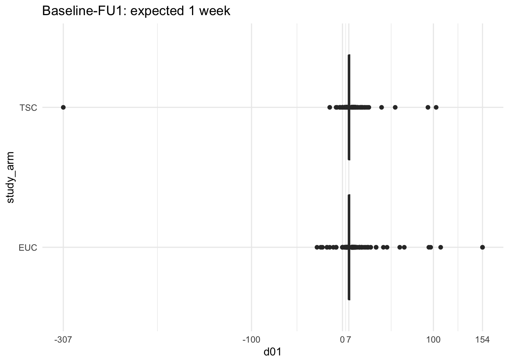
pf(d12,21,"FU1-FU2: expected 3 weeks")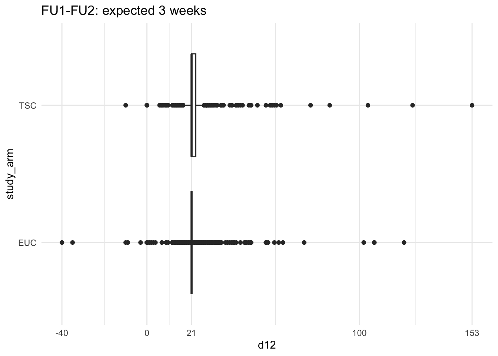
pf(d23,28,"FU2-FU3: expected 4 weeks")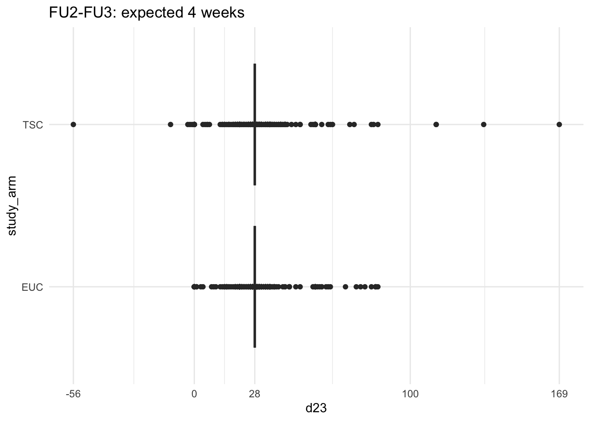
pf(d34,56,"FU3-FU4: expected 8 weeks")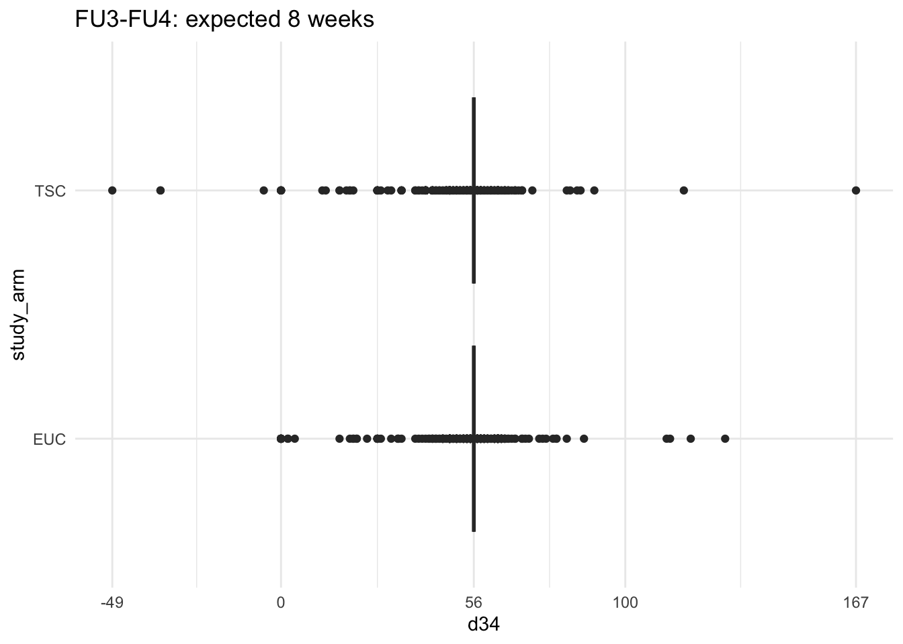
pf(d45,56,"FU4-FU5: expected 8 weeks")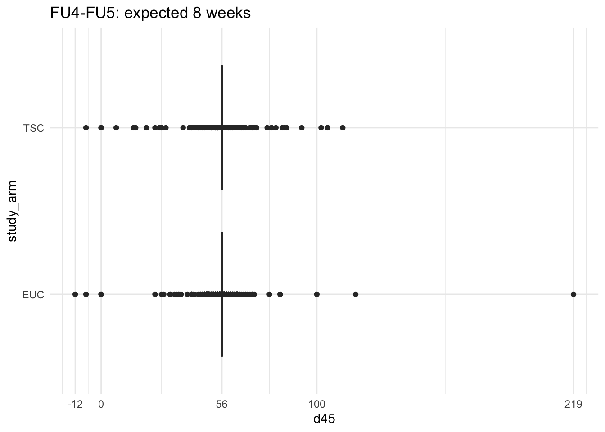
pf(d56,84,"FU5-FU6: expected 12 weeks")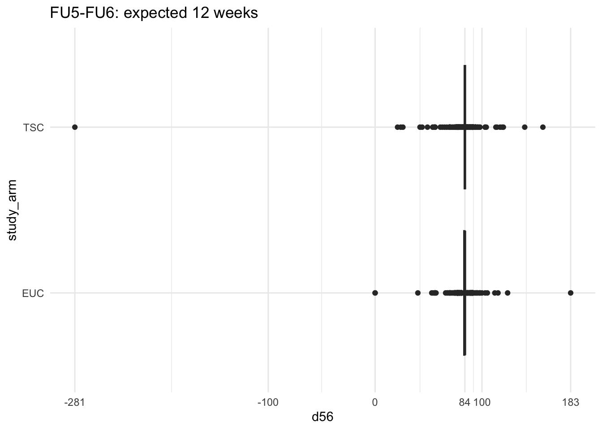
pf(d67,84,"FU6-FU7: expected 12 weeks")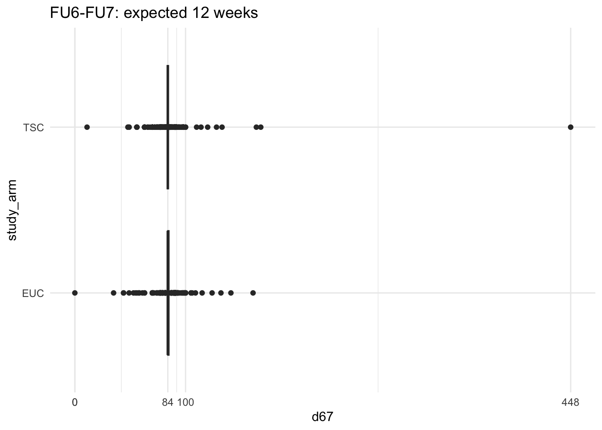
pf(d78,84,"FU7-FU8: expected 12 weeks")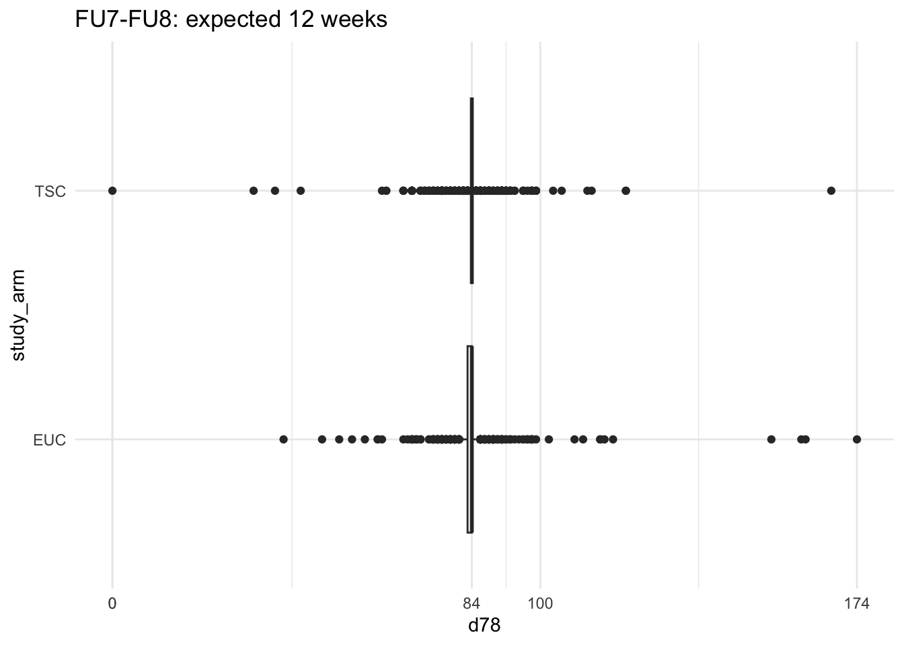
QOLIE-AD-48: for 11 < age < 17
QOLIE-31: for age > 17
3 times totally, should be screening(month 0), month 2, month 24.
Question 16 and 18 (Cramer, 1999) in QOLIE-AD-48 are missing and then ignored from the survey.
####score qolie 31####
score_q31 <- function(df) {
d1 <- df %>% mutate(
#seizure worry
sw1=ifelse(q11==1,0,NA),
sw1=ifelse(q11==2,20, sw1),
sw1=ifelse(q11==3,40, sw1),
sw1=ifelse(q11==4,60, sw1),
sw1=ifelse(q11==5,80, sw1),
sw1=ifelse(q11==6,100,sw1),
sw2=ifelse(q21==1,0,NA),
sw2=ifelse(q21==2,33.3,sw2),
sw2=ifelse(q21==3,66.7,sw2),
sw2=ifelse(q21==4,100, sw2),
sw3=ifelse(q22==1,0,NA),
sw3=ifelse(q22==2,50, sw3),
sw3=ifelse(q22==3,100,sw3),
sw4=ifelse(q23==1,0,NA),
sw4=ifelse(q23==2,33.3,sw4),
sw4=ifelse(q23==3,66.7,sw4),
sw4=ifelse(q23==4,100, sw4),
sw5=ifelse(q25==1,100,NA),
sw5=ifelse(q25==2,75,sw5),
sw5=ifelse(q25==3,50,sw5),
sw5=ifelse(q25==4,25,sw5),
sw5=ifelse(q25==5,0, sw5)
) %>% mutate(
#overall quality of life
ql1=q1*10,
ql2=ifelse(q14==1,100,NA),
ql2=ifelse(q14==2,75,ql2),
ql2=ifelse(q14==3,50,ql2),
ql2=ifelse(q14==4,25,ql2),
ql2=ifelse(q14==5,0, ql2)
) %>% mutate(
#emotional well-being
ew1=ifelse(q3==1,0,NA),
ew1=ifelse(q3==2,20, ew1),
ew1=ifelse(q3==3,40, ew1),
ew1=ifelse(q3==4,60, ew1),
ew1=ifelse(q3==5,80, ew1),
ew1=ifelse(q3==6,100,ew1),
ew2=ifelse(q4==1,0,NA),
ew2=ifelse(q4==2,20, ew2),
ew2=ifelse(q4==3,40, ew2),
ew2=ifelse(q4==4,60, ew2),
ew2=ifelse(q4==5,80, ew2),
ew2=ifelse(q4==6,100,ew2),
ew3=ifelse(q5==1,100,NA),
ew3=ifelse(q5==2,80,ew3),
ew3=ifelse(q5==3,60,ew3),
ew3=ifelse(q5==4,40,ew3),
ew3=ifelse(q5==5,20,ew3),
ew3=ifelse(q5==6,0, ew3),
ew4=ifelse(q7==1,0,NA),
ew4=ifelse(q7==2,20, ew4),
ew4=ifelse(q7==3,40, ew4),
ew4=ifelse(q7==4,60, ew4),
ew4=ifelse(q7==5,80, ew4),
ew4=ifelse(q7==6,100,ew4),
ew5=ifelse(q9==1,100,NA),
ew5=ifelse(q9==2,80,ew5),
ew5=ifelse(q9==3,60,ew5),
ew5=ifelse(q9==4,40,ew5),
ew5=ifelse(q9==5,20,ew5),
ew5=ifelse(q9==6,0, ew5),
) %>% mutate(
#energy/fatigue
ef1=ifelse(q2==1,100,NA),
ef1=ifelse(q2==2,80,ef1),
ef1=ifelse(q2==3,60,ef1),
ef1=ifelse(q2==4,40,ef1),
ef1=ifelse(q2==5,20,ef1),
ef1=ifelse(q2==6,0, ef1),
ef2=ifelse(q6==1,100,NA),
ef2=ifelse(q6==2,80,ef2),
ef2=ifelse(q6==3,60,ef2),
ef2=ifelse(q6==4,40,ef2),
ef2=ifelse(q6==5,20,ef2),
ef2=ifelse(q6==6,0, ef2),
ef3=ifelse(q8==1,0,NA),
ef3=ifelse(q8==2,20, ef3),
ef3=ifelse(q8==3,40, ef3),
ef3=ifelse(q8==4,60, ef3),
ef3=ifelse(q8==5,80, ef3),
ef3=ifelse(q8==6,100,ef3),
ef4=ifelse(q10==1,0,NA),
ef4=ifelse(q10==2,20, ef4),
ef4=ifelse(q10==3,40, ef4),
ef4=ifelse(q10==4,60, ef4),
ef4=ifelse(q10==5,80, ef4),
ef4=ifelse(q10==6,100,ef4),
) %>% mutate(
#cognitive
cg1=ifelse(q12==1,0,NA),
cg1=ifelse(q12==2,20, cg1),
cg1=ifelse(q12==3,40, cg1),
cg1=ifelse(q12==4,60, cg1),
cg1=ifelse(q12==5,80, cg1),
cg1=ifelse(q12==6,100,cg1),
cg2=ifelse(q15==1,0,NA),
cg2=ifelse(q15==2,33.3,cg2),
cg2=ifelse(q15==3,66.7,cg2),
cg2=ifelse(q15==4,100, cg2),
cg3=ifelse(q16==1,0,NA),
cg3=ifelse(q16==2,20, cg3),
cg3=ifelse(q16==3,40, cg3),
cg3=ifelse(q16==4,60, cg3),
cg3=ifelse(q16==5,80, cg3),
cg3=ifelse(q16==6,100,cg3),
cg4=ifelse(q17==1,0,NA),
cg4=ifelse(q17==2,20, cg4),
cg4=ifelse(q17==3,40, cg4),
cg4=ifelse(q17==4,60, cg4),
cg4=ifelse(q17==5,80, cg4),
cg4=ifelse(q17==6,100,cg4),
cg5=ifelse(q18==1,0,NA),
cg5=ifelse(q18==2,20, cg5),
cg5=ifelse(q18==3,40, cg5),
cg5=ifelse(q18==4,60, cg5),
cg5=ifelse(q18==5,80, cg5),
cg5=ifelse(q18==6,100,cg5),
cg6=ifelse(q26==1,100,NA),
cg6=ifelse(q26==2,75,cg6),
cg6=ifelse(q26==3,50,cg6),
cg6=ifelse(q26==4,25,cg6),
cg6=ifelse(q26==5,0, cg6)
) %>% mutate(
#medication effects
me1=ifelse(q24==1,0,NA),
me1=ifelse(q24==2,33.3,me1),
me1=ifelse(q24==3,66.7,me1),
me1=ifelse(q24==4,100, me1),
me2=ifelse(q29==1,100,NA),
me2=ifelse(q29==2,75,me2),
me2=ifelse(q29==3,50,me2),
me2=ifelse(q29==4,25,me2),
me2=ifelse(q29==5,0, me2),
me3=ifelse(q30==1,100,NA),
me3=ifelse(q30==2,75,me3),
me3=ifelse(q30==3,50,me3),
me3=ifelse(q30==4,25,me3),
me3=ifelse(q30==5,0, me3)
) %>% mutate(
#social function
sf1=ifelse(q13==1,0,NA),
sf1=ifelse(q13==2,20, sf1),
sf1=ifelse(q13==3,40, sf1),
sf1=ifelse(q13==4,60, sf1),
sf1=ifelse(q13==5,80, sf1),
sf1=ifelse(q13==6,100,sf1),
sf2=ifelse(q19==1,0,NA),
sf2=ifelse(q19==2,25, sf2),
sf2=ifelse(q19==3,50, sf2),
sf2=ifelse(q19==4,75, sf2),
sf2=ifelse(q19==5,100,sf2),
sf3=ifelse(q20==1,0,NA),
sf3=ifelse(q20==2,25, sf3),
sf3=ifelse(q20==3,50, sf3),
sf3=ifelse(q20==4,75, sf3),
sf3=ifelse(q20==5,100,sf3),
sf4=ifelse(q27==1,100,NA),
sf4=ifelse(q27==2,75,sf4),
sf4=ifelse(q27==3,50,sf4),
sf4=ifelse(q27==4,25,sf4),
sf4=ifelse(q27==5,0, sf4),
sf5=ifelse(q28==1,100,NA),
sf5=ifelse(q28==2,75,sf5),
sf5=ifelse(q28==3,50,sf5),
sf5=ifelse(q28==4,25,sf5),
sf5=ifelse(q28==5,0, sf5)
)
#summarise: what to do with missing item? currently averaging by domain
d1 %>% rowwise() %>%
mutate(sum_sw=mean(c(sw1,sw2,sw3,sw4,sw5),na.rm = T),
sum_ql=mean(c(ql1,ql2),na.rm = T),
sum_ew=mean(c(ew1,ew2,ew3,ew4,ew5),na.rm = T),
sum_ef=mean(c(ef1,ef2,ef3,ef4),na.rm = T),
sum_cg=mean(c(cg1,cg2,cg3,cg4,cg5,cg6),na.rm = T),
sum_me=mean(c(me1,me2,me3),na.rm = T),
sum_sf=mean(c(sf1,sf2,sf3,sf4,sf5),na.rm = T)
) %>% ungroup() %>%
mutate(overall=sum_sw*0.08+sum_ql*0.14+sum_ew*0.15+sum_ef*0.12+
sum_cg*0.27+sum_me*0.03+sum_sf*0.21)
#what if missing one domain?
# return(d2)
}# score for questions that have 5-point
sc5 <- function(dt,vf,vt) {
v1 <- vf
v1 <- ensym(v1)
dd <- dt %>% select(!!v1) %>%
mutate(v=ifelse(!!v1==1,0,NA),
v=ifelse(!!v1==2,25, v),
v=ifelse(!!v1==3,50, v),
v=ifelse(!!v1==4,75, v),
v=ifelse(!!v1==5,100,v)) %>%
select(-!!v1)
names(dd) <- vt
return(dd)
}
#score for questions that have 4-point
sc4 <- function(dt,vf,vt) {
v1 <- vf
v1 <- ensym(v1)
dd <- dt %>% select(!!v1) %>%
mutate(v=ifelse(!!v1==1,0,NA),
v=ifelse(!!v1==2,33.3, v),
v=ifelse(!!v1==3,66.7, v),
v=ifelse(!!v1==4,100, v)) %>%
select(-!!v1)
names(dd) <- vt
return(dd)
}
#missing 16,18 for now
score_q48 <- function(df) {
#epilepsy impact
ei <- list(
lq = paste0("q",c(25,26,28:34,36,47,48)),
lv = paste0("ei",1:12)
)
r_ei <- map2(ei$lq,ei$lv,~sc5(dt=df,vf=.x,vt=.y)) %>% bind_cols()
#memory/concentration
mc <- list(
# lq = paste0("q",c(8,12:20)),
lq = paste0("q",c(8,12:15,17,19,20)),
# lv = paste0("mc",1:10)
lv = paste0("mc",1:8)
)
r_mc <- map2(mc$lq,mc$lv,~sc5(dt=df,vf=.x,vt=.y)) %>% bind_cols()
#attitudes toward epilepsy
at <- list(
lq = paste0("q",c(43:46)),
lv = paste0("at",1:4)
)
r_at <- map2(at$lq,at$lv,~sc5(dt=df,vf=.x,vt=.y)) %>% bind_cols()
#physical functioning
pf <- list(
lq = paste0("q",c(3:7)),
lv = paste0("pf",1:5)
)
r_pf <- map2(pf$lq,pf$lv,~sc5(dt=df,vf=.x,vt=.y)) %>% bind_cols()
#stigma (4 category)
st <- list(
lq = paste0("q",c(37:42)),
lv = paste0("st",1:6)
)
r_st <- map2(st$lq,st$lv,~sc4(dt=df,vf=.x,vt=.y)) %>% bind_cols()
#social support
ss <- list(
lq = paste0("q",c(21:24)),
lv = paste0("ss",1:4)
)
r_ss <- map2(ss$lq,ss$lv,~sc5(dt=df,vf=.x,vt=.y)) %>% bind_cols()
#school behavior
sb <- list(
lq = paste0("q",c(9:11,27)),
lv = paste0("sb",1:4)
)
r_sb <- map2(sb$lq,sb$lv,~sc5(dt=df,vf=.x,vt=.y)) %>% bind_cols()
#health perceptions
hp <- list(
lq = paste0("q",c(1,2,35)),
lv = paste0("hp",1:3)
)
r_hp <- map2(hp$lq,hp$lv,~sc5(dt=df,vf=.x,vt=.y)) %>% bind_cols()
#summarise: what to do with missing item? currently averaging by domain
d1 <- bind_cols(r_ei,r_mc,r_at,r_pf,r_st,r_ss,r_sb,r_hp) %>% rowwise() %>%
mutate(sum_ei=mean(c_across(ei1:ei12),na.rm = T),
# sum_mc=mean(c_across(mc1:mc10),na.rm = T),
sum_mc=mean(c_across(mc1:mc8),na.rm = T),
sum_at=mean(c_across(at1:at4),na.rm = T),
sum_pf=mean(c_across(pf1:pf5),na.rm = T),
sum_st=mean(c_across(st1:st6),na.rm = T),
sum_ss=mean(c_across(ss1:ss4),na.rm = T),
sum_sb=mean(c_across(sb1:sb4),na.rm = T),
sum_hp=mean(c_across(hp1:hp3),na.rm = T)
) %>% ungroup() %>%
mutate(overall=sum_ei*0.31+
sum_mc*0.17+
sum_at*0.09+
sum_pf*0.09+
sum_st*0.13+
sum_ss*0.02+
sum_sb*0.06+
sum_hp*0.12)
}if Missed_fu is
For the NA(blank answers) and “Visit Done”, we have no reasons to set them all as missing or not missing.
So I use the important indices(follow_up_care_form_complete, confirmseize, weight_fu_v2, confirm_seizure_class_v2) to distinguish whether they are actually missing or not.
fcf = fu %>%
filter(redcap_repeat_instrument=="follow_up_care_form") %>%
mutate(incomplete=
ifelse(follow_up_care_form_complete<2 | is.na(confirmseize) | is.na(weight_fu_v2) | is.na(seizeclass),1,0)) %>%
mutate(missed = ifelse(missed_fu %in% c("No", "No missed", "None", "N0", "Not missed", "NO", "No miss", "No missing", "No messing", "No missen", "0", "On time") | ((str_detect(missed_fu, "Visit done") | str_detect(missed_fu, "Visit Done") | is.na(missed_fu)) & incomplete == 0), 0, 1))
fcf_c = fcf %>%
filter(missed == 0)
fcf_c %>%
count(incomplete, missed_fu,sort = TRUE) %>%
left_join(fcf_c %>% count(missed_fu), by = c("missed_fu"), suffix = c("_inclusive", "_in_and_ex")) %>%
mutate(pct = percent(n_inclusive / n_in_and_ex)) %>%
kable(caption = "incomplete = 0 means completing all the key questions") %>%
kable_styling() %>%
scroll_box(height = "400px")| incomplete | missed_fu | n_inclusive | n_in_and_ex | pct |
|---|---|---|---|---|
| 0 | NA | 14979 | 14979 | 100% |
| 0 | No | 269 | 269 | 100% |
| 0 | No missed | 64 | 64 | 100% |
| 0 | None | 44 | 44 | 100% |
| 0 | N0 | 39 | 39 | 100% |
| 0 | Not missed | 14 | 14 | 100% |
| 0 | NO | 13 | 13 | 100% |
| 0 | 0 | 10 | 10 | 100% |
| 0 | Visit done, the CHW was sick. | 4 | 4 | 100% |
| 0 | No missing | 2 | 2 | 100% |
| 0 | Visit done the patient travelled for sallah break. | 2 | 2 | 100% |
| 0 | Visit done. I was sick at the follow up time. | 2 | 2 | 100% |
| 0 | Visit done. The patient travelled. | 2 | 2 | 100% |
| 0 | No messing | 1 | 1 | 100% |
| 0 | No missen | 1 | 1 | 100% |
| 0 | On time | 1 | 1 | 100% |
| 0 | Visit Done, Patient travelled with his mother | 1 | 1 | 100% |
| 0 | Visit Done, the CHW put to bed a baby during the follow up period and was unable to bring the tablet for synching. | 1 | 1 | 100% |
| 0 | Visit Done, the CHW was nursing her sick infant child during the follow up period. | 1 | 1 | 100% |
| 0 | Visit Done, the CHW was sick and couldn't get the follow up on time. | 1 | 1 | 100% |
| 0 | Visit Done. I was sick. | 1 | 1 | 100% |
| 0 | Visit Done. It is a phone visit, because the patient has moved to other part of the state and they couldn't get measuring scale for height, head and arm circumference. | 1 | 1 | 100% |
| 0 | Visit Done. The parent couldn't be reached. | 1 | 1 | 100% |
| 0 | Visit Done. The patient didn't come on the appointed date due to his mother's ilness. | 1 | 1 | 100% |
| 0 | Visit Done. The patient travelled to Jigawa State. | 1 | 1 | 100% |
| 0 | Visit Done. The patient travelled to another state in Nigeria which resulted in the delay for this follow up. | 1 | 1 | 100% |
| 0 | Visit Done. The patient's mother was not around. | 1 | 1 | 100% |
| 0 | Visit done but the child lost wight becouse she have fever and abd pain send to Dr to see at Hospital | 1 | 1 | 100% |
| 0 | Visit done child have fever send Dr see | 1 | 1 | 100% |
| 0 | Visit done no seizures but the child is very slim due to lack of food my the mother | 1 | 1 | 100% |
| 0 | Visit done the child didn't not have seizures but her condition is not good and wight is lost and no fever or diarrhoes l send them to see a Dr that Hospital | 1 | 1 | 100% |
| 0 | Visit done, The CHW was sick during the follow up period. | 1 | 1 | 100% |
| 0 | Visit done, but it was late because the patient travelled to Funtua LGA in Katsina State where there is not network communication. | 1 | 1 | 100% |
| 0 | Visit done, the CHW was nursing her child during the follow up period. | 1 | 1 | 100% |
| 0 | Visit done, the patient travelled and are now back home. | 1 | 1 | 100% |
| 0 | Visit done, the patient travelled but are now back home. | 1 | 1 | 100% |
| 0 | Visit done, the patient travelled for sallah break | 1 | 1 | 100% |
| 0 | Visit done. | 1 | 1 | 100% |
| 0 | Visit done. At first, the father said they travel for wedding, and they will spend 2 weeks, so after 2 weeks i call there number is not going so i desided to pay them a visit, today 6 oct 2021, yet the mother said she cannot go for BP today. she said she will make it next week. | 1 | 1 | 100% |
| 0 | Visit done. I was ill during the time of the visit, i could not do it on time! | 1 | 1 | 100% |
| 0 | Visit done. I was sick - therefore, the visit was delayed. | 1 | 1 | 100% |
| 0 | Visit done. I was sick during the appointment date. | 1 | 1 | 100% |
| 0 | Visit done. I was sick during the follow up visif,so i could not do it on time. | 1 | 1 | 100% |
| 0 | Visit done. I was sick during the follow up visit, that is why the follow up was delay. | 1 | 1 | 100% |
| 0 | Visit done. It was delayed because the patient travelled. | 1 | 1 | 100% |
| 0 | Visit done. It was delayed because they relocated and their line was unreachable. | 1 | 1 | 100% |
| 0 | Visit done. It was delayed due to the fact that the father who normally brings the child to the followup was sick. Moreover, the CHW figured financial constraints with the father and intended to give a helping hand but they couldn't be reached via phone afterwards until 3 weeks ago. | 1 | 1 | 100% |
| 0 | Visit done. Patient couldn't be reached. | 1 | 1 | 100% |
| 0 | Visit done. Patient relocated but we tracked them and they are able to come for both blinded physician and CHW visits today. | 1 | 1 | 100% |
| 0 | Visit done. She travelled at follow up time. | 1 | 1 | 100% |
| 0 | Visit done. The CHW lost contact with the parents of the child until last Monday. As such, the visit is measured late. | 1 | 1 | 100% |
| 0 | Visit done. The CHW regains contact with the mother of the child after over 3 months of tireless tracking. The mother travelled to Niger Republic. The notification of the journey to the CHW failed. She told the CHW that, the child has been on the AED while they were away (abroad). | 1 | 1 | 100% |
| 0 | Visit done. The CHW was sick at the time of the visit. | 1 | 1 | 100% |
| 0 | Visit done. The child had diarrhoea which made him loose 3kg of weight. | 1 | 1 | 100% |
| 0 | Visit done. The child had lost in weight due to malaria fever. But she has recovered. | 1 | 1 | 100% |
| 0 | Visit done. The delay was due to the fact their phone was unreachable. | 1 | 1 | 100% |
| 0 | Visit done. The follow up was done within the window. The CHW lost her father and was in mourning. | 1 | 1 | 100% |
| 0 | Visit done. The increased in previous weight occurs due to problem of weighing scale used before receiving the new one for the study. | 1 | 1 | 100% |
| 0 | Visit done. The mother can not afford to buy the drug any more due to financial constraints, and the father is not giving any help.That is why the mother is trying to switch to traditional medicine but unfortunately the traditional healer deceived them and collect their money without treating her and ran away. This is what her Aunty told me the time I went to the house where they used to reside if they are coming for follow up and other schedules, because I couldn't reach them on phone. I have collected their full current residential address for tracing. | 1 | 1 | 100% |
| 0 | Visit done. The mother was sick. | 1 | 1 | 100% |
| 0 | Visit done. The parent relocated to Yobe state. | 1 | 1 | 100% |
| 0 | Visit done. The parent's phone couldn't be reached. | 1 | 1 | 100% |
| 0 | Visit done. The parents relocated to a new location without notice and their contact couldn't be reached until last Thursday 2nd September 2021. Therefore, the visit was delayed. | 1 | 1 | 100% |
| 0 | Visit done. The patient is currently living with her grandmother in Abuja. She's returning to Kano only when secondary schools closes for sessional holidays. As such, the followup visit was delayed. | 1 | 1 | 100% |
| 0 | Visit done. The patient traveled at the appointment date. | 1 | 1 | 100% |
| 0 | Visit done. The patient travelled since before Sallah break. | 1 | 1 | 100% |
| 0 | Visit done. The patient travelled to their Village. | 1 | 1 | 100% |
| 0 | Visit done. The patient travelled. Later, I was sick and admitted into hospital. | 1 | 1 | 100% |
| 0 | Visit done. The patient was missing since mid June 2021. Parents were lucky to find the child end of August 2021. | 1 | 1 | 100% |
| 0 | Visit done. The reason it was delayed is because the patient travelled. | 1 | 1 | 100% |
| 0 | Visit done. The visit wasn't done at appointment date because his mother was sick at the time. | 1 | 1 | 100% |
| 0 | Visit done. They missed appointment because of transportion. | 1 | 1 | 100% |
| 0 | Visit done. They patient travelled outside Kano. | 1 | 1 | 100% |
| 0 | Visit done. They temporarily relocated to Lagos. | 1 | 1 | 100% |
| 0 | Visit done. They travel at the appointment date. | 1 | 1 | 100% |
| 0 | Visit done. They traveled at the appointment date. | 1 | 1 | 100% |
| 0 | Visit done. They traveled. | 1 | 1 | 100% |
| 0 | Visit done. They travelled at the follow up time. | 1 | 1 | 100% |
| 0 | Visit done. They travelled to Bauchi state at that time. | 1 | 1 | 100% |
| 0 | Visit done. They were not around at that time. | 1 | 1 | 100% |
| 0 | Visit done.The patient was not available on the exact follow up day. | 1 | 1 | 100% |
fcf_c = fcf_c %>% select(-gender) %>% left_join(gender, by = c("record_id", "study_arm"))Source
from both Screening and Follow up visits;
including both QOLIE-31 and QOLIE-AD-48.
Logic for selecting same-day QOLIE records
For every participant, if there exists 2 QOLIE records on the same day,
choose the one with type(QOLIE-31/QOLIE-AD-48) more eligible for the age(11-17 use QOLIE-AD-48, >18 use QOLIE-31);
if the same QOLIE type, choose the one with less missing domain and less missing items;
if still the same, choose the one with bigger instance.
Logic for i-th QOLIE
For every participant,
the baseline date is obtained from date_consent_screen or dataconsentenroll, choosing one based on ev0;
0th QOLIE(first): the first occurence of QOLIE records, no matter whether the date is on or before or after the baseline date, and no matter whether the record is from Screening or Follow up Visits, except from one case: the date is after “2022-01-01”;
3rd QOLIE(last): the last time of QOLIE records and the date is after “2022-01-01”. For those who have only one time QOLIE record, if the date is after “2022-01-01”, the record will be labeled as the 3-rd, as the participants are only old enough(>11) for the last time of visits(maybe we can compare their previous VAS score and this time of QOLIE);
1st or 2nd: the ones between the 0th and 3rd. For participants with 4 times of QOLIE and participants with 2 times of after-“2022-01-01” QOLIE, the 2nd will be filled – they could also be dropped as they are not so consistent with the schedule;
For the records with “NA” dates, the order will depend on the instance. I prefer to put them on the 2nd, as they might be dropped as the data includes too much noises.
q31_fu = fu %>% filter(redcap_repeat_instrument=="qolie_31_17_v0_m2_m24") %>%
select(record_id, study_arm, starts_with("red"), contains("qolie31"), complete = qolie_31_17_v0_m2_m24_complete) %>%
rename_at(vars(starts_with("qolie31_q")),~str_remove(.,"qolie31_")) %>%
mutate(form = "Follow Up Visits")
q31_scr = bs %>% filter(qolie_31_17_v0_complete == "2") %>%
select(record_id = unique_id, study_arm, starts_with("red"), contains("qolie31"), complete = qolie_31_17_v0_complete,-redcap_event_name) %>%
rename_at(vars(starts_with("qolie31_q")),~str_remove(.,"qolie31_")) %>%
mutate(form = "Screening")
q31 = rbind.data.frame(q31_scr, q31_fu)
q48_fu <- fu %>% filter(redcap_repeat_instrument=="qolie_48_1117_v0_m2_m24") %>%
select(record_id,study_arm,starts_with("red"),contains("qolie48"), complete = qolie_48_1117_v0_m2_m24_complete) %>%
mutate(form = "Follow Up Visits")
q48_scr = bs %>% filter(qolie_48_1117_v0_complete == "2") %>%
select(record_id = unique_id, study_arm, starts_with("red"), contains("qolie48"), complete = qolie_48_1117_v0_complete,-redcap_event_name) %>%
mutate(form = "Screening")
q48 = rbind.data.frame(q48_scr, q48_fu)# QOLIE-31
r31 <- score_q31(q31)
r31x <- r31 %>% rowwise() %>%
mutate(miss_item=sum(is.na(c_across(sw1:sf5))),
miss_domain=sum(is.na(c_across(starts_with("sum")))))
# QOLIE-AD-48
xwalk <- readxl::read_xlsx("~/Documents/GitHub/MarkovDA/data/qolie48_xwalk.xlsx")
vv = data.frame(vn_redcap=names(q48),x=1:length(names(q48)),stringsAsFactors = F) %>%
left_join(xwalk, by = "vn_redcap")
# there will be NA
#rename survey question to align with original questionnaire
for(i in 1:nrow(vv)) {
if (is.na(vv$vn_Cramer[i])) {
vv$vn_Cramer[i] = vv$vn_redcap[i]
}
}
names(q48) = vv$vn_Cramer
r48p <- score_q48(q48)
r48 <- bind_cols(q48,r48p)
r48x <- r48 %>% rowwise() %>%
mutate(miss_item=sum(is.na(c_across(ei1:hp3))),
miss_domain=sum(is.na(c_across(starts_with("sum")))))allqolie = r48x %>% mutate(type = "QOLIE-AD-48") %>%
select(record_id, study_arm, dateqolie = dateqolie48, score = overall, type, instance = redcap_repeat_instance, miss_item, miss_domain) %>%
full_join(r31x %>% mutate(type = "QOLIE-31") %>%
select(record_id, study_arm, dateqolie = dateqolie31, score = overall, type, instance = redcap_repeat_instance, miss_item, miss_domain)) %>%
left_join(basedate %>% select(-age), by = c("record_id", "study_arm")) %>%
filter(!is.nan(score))
allqolie = allqolie %>% count(record_id, sort = TRUE) %>% rename(qolietimes = n) %>% left_join(allqolie) %>%
mutate(age = as.numeric(dateqolie - bd)/365.25, eligibility = ifelse(age > 17, "QOLIE-31", ifelse(age < 11, "VAS", "QOLIE-AD-48"))) %>%
arrange(desc(qolietimes), record_id, dateqolie, desc(miss_domain), desc(miss_item), instance)## repeat -- same day twice
repeated = allqolie %>% group_by(record_id) %>% count(dateqolie) %>% filter(n > 1) %>% rename(repeattime = n)
# All of ns are 2.
repeatqolie = allqolie %>% left_join(repeated) %>% filter(repeattime == 2) %>% mutate(remove = 0)
for (i in seq(1,nrow(repeatqolie),2)){
## first -- type
if (repeatqolie[i,"type"] != repeatqolie[i+1,"type"]){
if (repeatqolie[i,"type"] == repeatqolie[i, "eligibility"]){
repeatqolie[i+1, "remove"] = 1
} else {
repeatqolie[i, "remove"] = 1
}
} else {
## then -- miss_item
if (repeatqolie[i,"miss_item"] != repeatqolie[i+1, "miss_item"]) {
max_item = max(repeatqolie[i,"miss_item"], repeatqolie[i+1,"miss_item"])
if (repeatqolie[i,"miss_item"] == max_item) {
repeatqolie[i,"remove"] = 1
} else {
repeatqolie[i+1,"remove"] = 1
}
} else {
## asc(instance) so smaller instance will be removed
repeatqolie[i,"remove"] = 1
}
}
}
allqolie_c = allqolie %>% left_join(repeatqolie) %>% filter(remove == 0 | is.na(remove)) %>% select(-repeattime, -remove, -qolietimes)
allqolie_c = allqolie_c %>% count(record_id, sort = TRUE) %>% rename(qolietimes = n) %>% left_join(allqolie_c)
## order = 0
order0 = allqolie_c %>% filter(!is.na(dateqolie)) %>% group_by(record_id) %>% filter(dateqolie == min(dateqolie)) %>%
ungroup() %>% filter(dateqolie < "2022-01-01") %>% mutate(order = 0)
## order = 3
order3 = allqolie_c %>% filter(!is.na(dateqolie)) %>% group_by(record_id) %>% filter(dateqolie == max(dateqolie)) %>%
ungroup() %>% filter(dateqolie >= "2022-01-01") %>% mutate(order = 3)
## the first time but > 2022-01-01 -- if only once but 2022
## order = 2
order2_1 = allqolie_c %>% group_by(record_id) %>% filter(dateqolie == min(dateqolie)) %>%
ungroup() %>% filter(dateqolie >= "2022-01-01") %>% filter(qolietimes != 1) %>% mutate(order = 2)
#allqolie_c %>% filter(qolietimes == 1 & dateqolie >= "2022-01-01")
## two times both > 2022-01-01
order2_2 = allqolie_c %>% filter(dateqolie >= "2022-01-01") %>% group_by(record_id) %>% filter(dateqolie < max(dateqolie)) %>%
mutate(order = 2)
# date is NA
order2_3 = allqolie_c %>% filter(is.na(dateqolie)) %>% mutate(order = 2)
## 4 times
order2_4 = allqolie_c %>% filter(qolietimes == 4) %>% group_by(record_id) %>% filter(dateqolie != min(dateqolie) & dateqolie != max(dateqolie) & (difftime(dateqolie, min(dateqolie), units= "days") >= 80 | difftime(dateqolie, min(dateqolie), units= "days") <= 40)) %>%
mutate(order = 2)
order2_5 = allqolie_c %>% filter(qolietimes == 4) %>% group_by(record_id) %>% filter(dateqolie != min(dateqolie) & dateqolie != max(dateqolie) & (difftime(dateqolie, min(dateqolie), units= "days") >= 42 & difftime(dateqolie, min(dateqolie), units= "days") <= 70)) %>%
filter((record_id == "PHC---134-90-2020-08-12 12:16" & dateqolie == "2020-10-02") | (record_id == "PHC---134-90-2020-08-17 21:47" & dateqolie == "2020-10-02") | (record_id == "PHC---141-119-2020-07-01 11:26" & dateqolie == "2020-09-06") | (record_id == "PHC--103--69-2020-11-23 10:26" & dateqolie == "2021-01-18")) %>%
mutate(order = 2)
## order = 1
order2_6 = allqolie_c %>% anti_join(order0) %>% anti_join(order3) %>% anti_join(order2_1) %>%
anti_join(order2_2) %>% anti_join(order2_3) %>% anti_join(order2_4) %>% anti_join(order2_5) %>% count(record_id) %>% filter(n>1) %>% left_join(allqolie_c) %>%
filter((record_id == "PHC---132-50-2020-06-26 10:47" & dateqolie == "2021-08-24") | (record_id == "PHC---132-50-2020-12-16 11:28" & dateqolie == "2020-12-23") | (record_id == "PHC---133-32-2020-08-10 10:09" & dateqolie == "2020-08-17") | (record_id == "PHC---133-44-2020-08-19 12:16" & dateqolie == "2020-10-30") | (record_id == "PHC--103--77-2020-11-19 04:30" & dateqolie == "2020-11-26")) %>% mutate(order = 2)
order2 = order2_1 %>%
full_join(order2_2) %>% full_join(order2_3) %>% full_join(order2_4) %>% full_join(order2_5) %>% full_join(order2_6) %>% select(-n)
order1 = allqolie_c %>% anti_join(order0) %>% anti_join(order3) %>% anti_join(order2) %>% mutate(order = 1)
## bind
allq = bind_rows(order0, order1, order2, order3)
# save(fu, bs, allq, fcf, fcf_c, gender, fudw, gender, location, dob, repeated, allqolie, order2, file = "with-drop-out.rda")allq = allq %>%
anti_join(fu %>% filter(reason != 1) %>% distinct(study_arm,record_id))
fcf_c = fcf_c %>% anti_join(fu %>% filter(reason != 1) %>% distinct(study_arm,record_id))
# save(fu, bs, allq, fcf, fcf_c, gender, fudw, gender, location, dob, repeated, allqolie, order2, file = "data/without-drop-out.rda")If you’d like to see the results for participants excluding drop-outs, load the “without-drop-out.rda”.
# load("data/with-drop-out.rda")
# load("without-drop-out.rda")Source
from both Screening and Follow up visits;
including both QOLIE-31 and QOLIE-AD-48.
Logic for selecting same-day QOLIE records
For every participant, if there exists 2 QOLIE records on the same day,
choose the one with type(QOLIE-31/QOLIE-AD-48) more eligible for the age(11-17 use QOLIE-AD-48, >18 use QOLIE-31);
if the same QOLIE type, choose the one with less missing domain and less missing items;
if still the same, choose the one with bigger instance.
There are 75 participants have 2 or more QOLIE records on the same day, the max times is 2.
Logic for i-th QOLIE
For every participant,
the baseline date is obtained from date_consent_screen or dataconsentenroll, choosing one based on ev0;
0th QOLIE(first): the first occurence of QOLIE records, no matter whether the date is on or before or after the baseline date, and no matter whether the record is from Screening or Follow up Visits, except from one case: the date is after “2022-01-01”; – There are 181 records of 0th order with the date later than the baseline date.
3rd QOLIE(last): the last time of QOLIE records and the date is after “2022-01-01”. For those who have only one time QOLIE record, if the date is after “2022-01-01”, the record will be labeled as the 3-rd, as the participants are only old enough(>11) for the last time of visits(maybe we can compare their previous VAS score and this time of QOLIE);
1st or 2nd: the ones between the 0th and 3rd. For participants with 4 times of QOLIE and participants with 2 times of after-“2022-01-01” QOLIE, the 2nd will be filled – they could also be dropped as they are not so consistent with the schedule;
For the 6 records with “NA” dates, the order will depend on the instance. I prefer to put them on the 2nd, as they might be dropped when building models as the data includes too much noises.
allq %>%
mutate(base = ifelse(type == 'QOLIE-AD-48', 47, 31), miss_item_p = (base - miss_item) / base, miss_item_pct = ifelse(miss_item_p == 1, '100%', ifelse(miss_item_p < 1 & miss_item_p >= 0.9, '90% - 99%', ifelse(miss_item_p < 0.9 & miss_item_p >= 0.8, '80% - 89%', 'below 80%')))) %>%
count(study_arm, miss_item_pct) %>%
group_by(study_arm) %>%
mutate(pct = percent(n / sum(n))) %>%
arrange(study_arm, desc(n)) %>%
ungroup() %>%
select(-study_arm) %>%
rename(complete_rate = miss_item_pct) %>%
kable(caption = "Complete Rates of QOLIE") %>%
kable_styling(full_width = F) %>%
pack_rows("EUC",1,4) %>%
pack_rows("TSC",5,8) %>%
scroll_box()| complete_rate | n | pct |
|---|---|---|
| EUC | ||
| 100% | 699 | 69.4% |
| 90% - 99% | 222 | 22.0% |
| 80% - 89% | 61 | 6.1% |
| below 80% | 25 | 2.5% |
| TSC | ||
| 100% | 838 | 74.3% |
| 90% - 99% | 224 | 19.9% |
| 80% - 89% | 59 | 5.2% |
| below 80% | 7 | 0.6% |
ggplot(data=allq, aes(x=miss_item)) +
geom_histogram(binwidth = 1) +
stat_bin(binwidth=1, geom="text", aes(label=..count..), vjust = -0.25) +
facet_grid(type~study_arm) +
theme_minimal() +
xlab("Number of missing item") + ylab("Freq") + ylim(c(0, 800)) +
ggtitle("Missing items among the questions in QOLIE")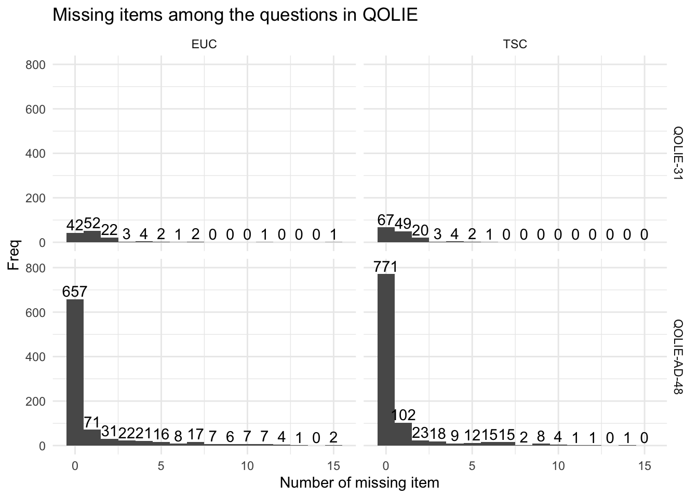
allq = allq %>% mutate(base = ifelse(type == 'QOLIE-AD-48', 47, 31), miss_item_p = (base - miss_item) / base) %>%
filter(miss_item_p >= 0.8) %>% select(-base, -miss_item_p)Then based on the completion rate, we’ll delete the cases with completion rate lower than 80%.
Number of Participants with QOLIE records: 813
Number of Participants being over 11 at lease once during visits: 873
There are 46 participants not old enough to use QOLIE (at least once), but indeed having QOLIE records.
Number of Participants eligible to have and indeed having QOLIE records: 786, rate is 90%
allq %>% count(record_id) %>%
rename(times_of_qolie = n) %>%
count(times_of_qolie) %>%
kable(caption = "times of QOLIE") %>%
kable_styling(full_width = F)| times_of_qolie | n |
|---|---|
| 1 | 154 |
| 2 | 60 |
| 3 | 567 |
| 4 | 32 |
cat("order 0th is the first one, order 3th is the last one (2022) ")order 0th is the first one, order 3th is the last one (2022) allq %>% group_by(study_arm, order) %>%
summarise(n_records = n(), mean_score = mean(score), sd_score = sd(score)) %>%
group_by(study_arm) %>%
mutate(pct_by_arm = percent(n_records / sum(n_records))) %>%
ungroup() %>%
select(order, n_records, pct_by_arm, mean_score, sd_score) %>%
kable(caption="QOLIE records by order") %>%
kable_styling(full_width = F, bootstrap_options = c("striped", "hover")) %>%
pack_rows("EUC",1,4) %>%
pack_rows("TSC",5,8)| order | n_records | pct_by_arm | mean_score | sd_score |
|---|---|---|---|---|
| EUC | ||||
| 0 | 314 | 32.0% | 48.95061 | 16.32521 |
| 1 | 289 | 29.4% | 50.63552 | 14.08038 |
| 2 | 19 | 1.9% | 40.82569 | 17.30808 |
| 3 | 360 | 36.7% | 53.38654 | 14.67627 |
| TSC | ||||
| 0 | 357 | 31.8% | 48.39177 | 15.64808 |
| 1 | 329 | 29.3% | 50.14836 | 14.75667 |
| 2 | 19 | 1.7% | 46.27617 | 15.75473 |
| 3 | 416 | 37.1% | 54.85074 | 13.93200 |
allq %>% group_by(study_arm, order, type) %>%
summarise(n_records = n(), mean_score = mean(score), sd_score = sd(score)) %>%
group_by(study_arm) %>%
mutate(pct_by_arm = percent(n_records / sum(n_records))) %>%
ungroup() %>%
select(order, type, n_records, pct_by_arm, mean_score, sd_score) %>%
kable(caption="QOLIE records by order") %>%
kable_styling(full_width = F, bootstrap_options = c("striped", "hover")) %>%
pack_rows("EUC",1,8) %>%
pack_rows("TSC",9,16)| order | type | n_records | pct_by_arm | mean_score | sd_score |
|---|---|---|---|---|---|
| EUC | |||||
| 0 | QOLIE-31 | 3 | 0.31% | 56.13713 | 8.209630 |
| 0 | QOLIE-AD-48 | 311 | 31.67% | 48.88129 | 16.375356 |
| 1 | QOLIE-31 | 13 | 1.32% | 53.96729 | 14.147086 |
| 1 | QOLIE-AD-48 | 276 | 28.11% | 50.47859 | 14.083550 |
| 2 | QOLIE-31 | 4 | 0.41% | 42.93823 | 7.414770 |
| 2 | QOLIE-AD-48 | 15 | 1.53% | 40.26235 | 19.281196 |
| 3 | QOLIE-31 | 106 | 10.79% | 57.38363 | 13.691124 |
| 3 | QOLIE-AD-48 | 254 | 25.87% | 51.71847 | 14.776838 |
| TSC | |||||
| 0 | QOLIE-31 | 6 | 0.535% | 47.05317 | 8.083108 |
| 0 | QOLIE-AD-48 | 351 | 31.311% | 48.41465 | 15.751050 |
| 1 | QOLIE-31 | 11 | 0.981% | 57.15158 | 9.376176 |
| 1 | QOLIE-AD-48 | 318 | 28.368% | 49.90611 | 14.858722 |
| 2 | QOLIE-31 | 5 | 0.446% | 57.10524 | 18.703434 |
| 2 | QOLIE-AD-48 | 14 | 1.249% | 42.40865 | 13.222303 |
| 3 | QOLIE-31 | 124 | 11.062% | 59.26109 | 11.612683 |
| 3 | QOLIE-AD-48 | 292 | 26.048% | 52.97785 | 14.422254 |
Totally, there are 241 participants having at least one time of QOLIE-31 – totally 272 records.
allq %>%
group_by(order) %>%
ggplot(aes(x=dateqolie)) +
geom_histogram(bins = 50) +
facet_grid(order~.) +
theme_minimal() +
xlab("QOLIE") + ylab("Freq") +
ggtitle("Histogram of QOLIE dates")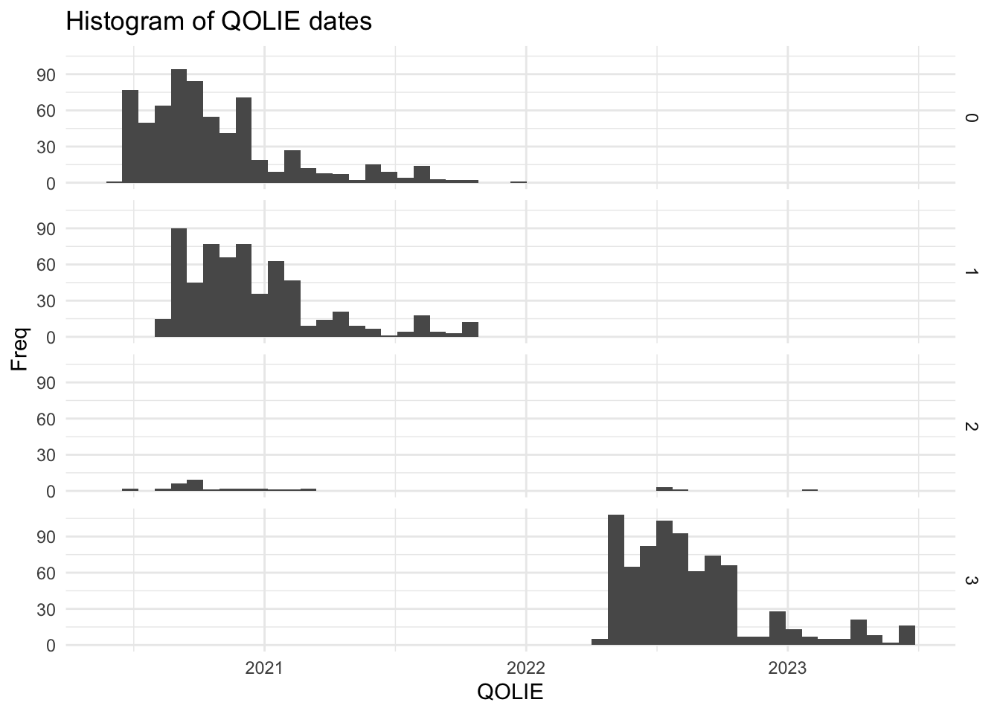
allq %>% distinct(record_id) %>% left_join(gender) %>%
mutate(gender=factor(gender,levels=1:2,labels=c("Female","Male"))) %>%
count(study_arm, gender) %>% group_by(study_arm) %>%
mutate(pct = percent(n/sum(n))) %>%
kable() %>%
kable_styling(full_width = F, bootstrap_options = c("striped", "hover"))| study_arm | gender | n | pct |
|---|---|---|---|
| EUC | Female | 136 | 36% |
| EUC | Male | 245 | 64% |
| TSC | Female | 159 | 37% |
| TSC | Male | 273 | 63% |
allq %>% distinct(record_id) %>% left_join(location) %>%
count(study_arm, city) %>% group_by(study_arm) %>%
mutate(pct = percent(n/sum(n))) %>%
kable() %>%
kable_styling(full_width = F, bootstrap_options = c("striped", "hover"))| study_arm | city | n | pct |
|---|---|---|---|
| EUC | Kaduna | 89 | 23.4% |
| EUC | Kano | 178 | 46.7% |
| EUC | Zaria | 114 | 29.9% |
| TSC | Kaduna | 97 | 22.5% |
| TSC | Kano | 229 | 53.0% |
| TSC | Zaria | 106 | 24.5% |
allq %>%
ggplot(aes(x = age)) +
geom_histogram(binwidth = 1) +
facet_grid(study_arm ~ order) +
theme_minimal() +
xlab("Age") + ylab("Freq") +
ggtitle("Age Distribution for QOLIE users")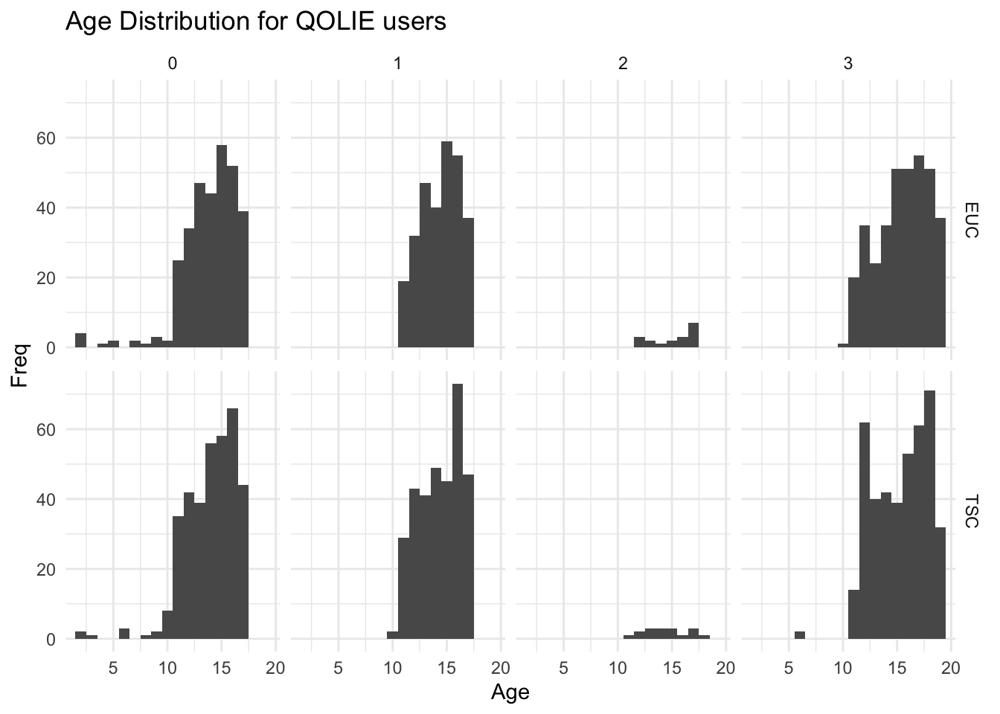
ggplot(allq %>% mutate(elig = factor(ifelse(type == eligibility, "Correct", "Ineligible"))), aes(x = age, y = score, color = factor(order), shape = elig)) +
geom_point(position = "dodge", alpha = 0.8) +
scale_color_brewer(palette = "Spectral")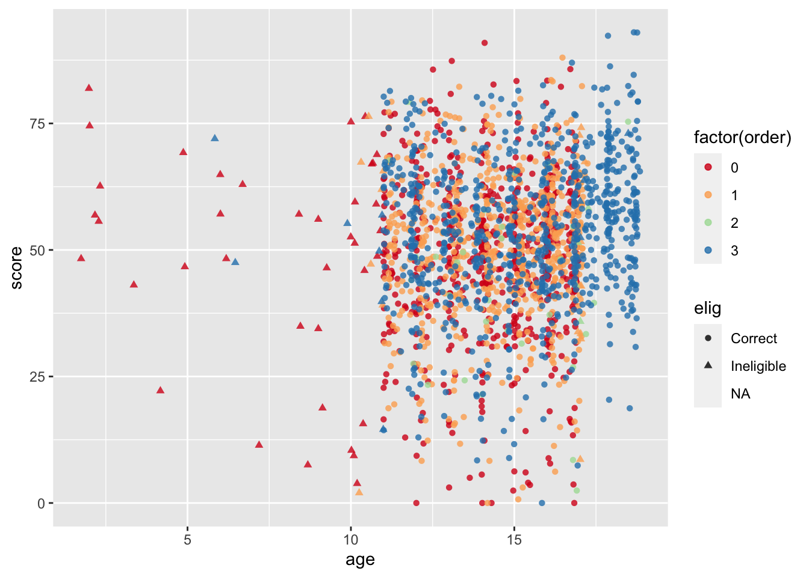
As the 2th records include lots of noises and have a small sample for both 2 arms, we may exclude it in the later analysis. The other 3 parts show a normal distribution shape and a small increasing tendency for the average score.
allq %>% group_by(study_arm, order) %>%
summarise(n_records = n(), mean_score = mean(score), sd_score = sd(score)) %>%
group_by(study_arm) %>%
mutate(pct_by_arm = percent(n_records / sum(n_records))) %>%
ungroup() %>%
select(order, n_records, pct_by_arm, mean_score, sd_score) %>%
kable(caption="QOLIE records by order") %>%
kable_styling(full_width = F, bootstrap_options = c("striped", "hover")) %>%
pack_rows("EUC",1,4) %>%
pack_rows("TSC",5,8)| order | n_records | pct_by_arm | mean_score | sd_score |
|---|---|---|---|---|
| EUC | ||||
| 0 | 314 | 32.0% | 48.95061 | 16.32521 |
| 1 | 289 | 29.4% | 50.63552 | 14.08038 |
| 2 | 19 | 1.9% | 40.82569 | 17.30808 |
| 3 | 360 | 36.7% | 53.38654 | 14.67627 |
| TSC | ||||
| 0 | 357 | 31.8% | 48.39177 | 15.64808 |
| 1 | 329 | 29.3% | 50.14836 | 14.75667 |
| 2 | 19 | 1.7% | 46.27617 | 15.75473 |
| 3 | 416 | 37.1% | 54.85074 | 13.93200 |
allq %>%
ggplot(aes(x=score, y=..density..)) +
geom_histogram(binwidth = 2) +
geom_density() +
facet_grid(study_arm ~ order) +
theme_minimal() +
xlab("QOLIE Scores") + ylab("Density") +
ggtitle("Density Distribution of valid QOLIE scores")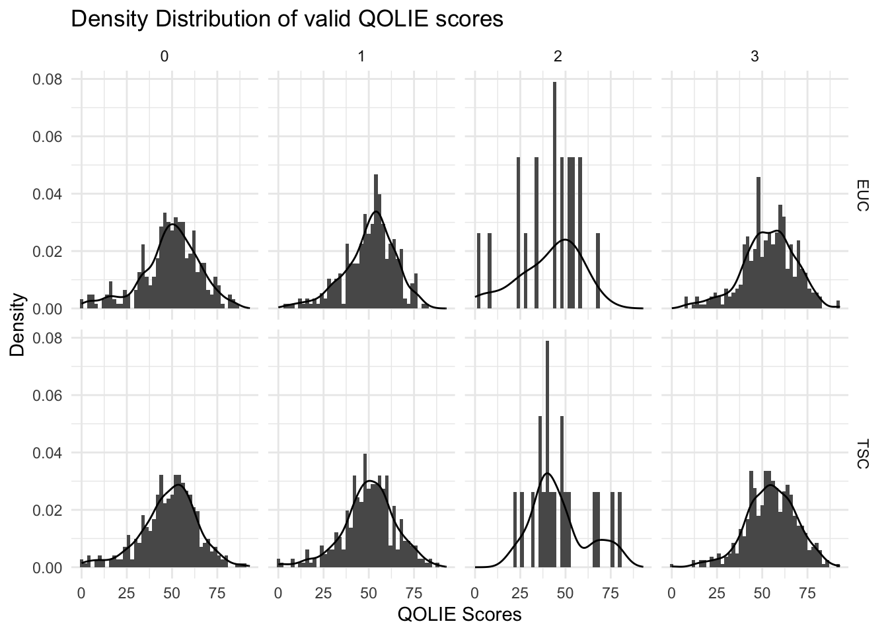
Because there are not enough samples for order == 2 which also includes some noises, I excluded the 2th order in the analysis. The inclusion criteria is: participants with at least 0th(the regarded “first”) and 3th(the regarded “last”) QOLIE records.
qinfo = allq %>% filter(order == 0) %>% select(record_id) %>% inner_join(allq %>% filter(order == 3), by = "record_id") %>% select(record_id) %>% left_join(allq) %>% filter(order != 2) %>% left_join(gender) %>% left_join(location)
# %>% filter(type = eligibility)
t.test(
score ~ factor(study_arm),
data = qinfo,
var.equal = TRUE
)
Two Sample t-test
data: score by factor(study_arm)
t = -0.43916, df = 1863, p-value = 0.6606
alternative hypothesis: true difference in means between group EUC and group TSC is not equal to 0
95 percent confidence interval:
-1.662510 1.054189
sample estimates:
mean in group EUC mean in group TSC
50.97605 51.28022 There’s no difference between 2 arms among all times.
The study arm, order, gender, and city variables are all categorical variables(like dummy variables) without numeric meaning, so we use factor here. Age is numeric.
summary(lm(score ~ factor(study_arm)*factor(order), qinfo))
Call:
lm(formula = score ~ factor(study_arm) * factor(order), data = qinfo)
Residuals:
Min 1Q Median 3Q Max
-55.145 -8.233 0.945 9.421 42.452
Coefficients:
Estimate Std. Error t value Pr(>|t|)
(Intercept) 48.6811 0.8601 56.600 < 2e-16 ***
factor(study_arm)TSC -0.2161 1.1728 -0.184 0.853857
factor(order)1 2.2354 1.2349 1.810 0.070442 .
factor(order)3 4.6461 1.2163 3.820 0.000138 ***
factor(study_arm)TSC:factor(order)1 -0.5351 1.6840 -0.318 0.750709
factor(study_arm)TSC:factor(order)3 2.0338 1.6585 1.226 0.220254
---
Signif. codes: 0 '***' 0.001 '**' 0.01 '*' 0.05 '.' 0.1 ' ' 1
Residual standard error: 14.72 on 1859 degrees of freedom
Multiple R-squared: 0.02752, Adjusted R-squared: 0.0249
F-statistic: 10.52 on 5 and 1859 DF, p-value: 5.62e-10interaction.plot(x.factor = qinfo$order, #x-axis variable
trace.factor = qinfo$study_arm, #variable for lines
response = qinfo$score, #y-axis variable
fun = mean, #metric to plot
ylab = "QOLIE Score (marginal mean)",
xlab = "Order of QOLIE",
col = c("pink", "blue"),
lty = 1, #line type
lwd = 2, #line width
trace.label = "Study Arm")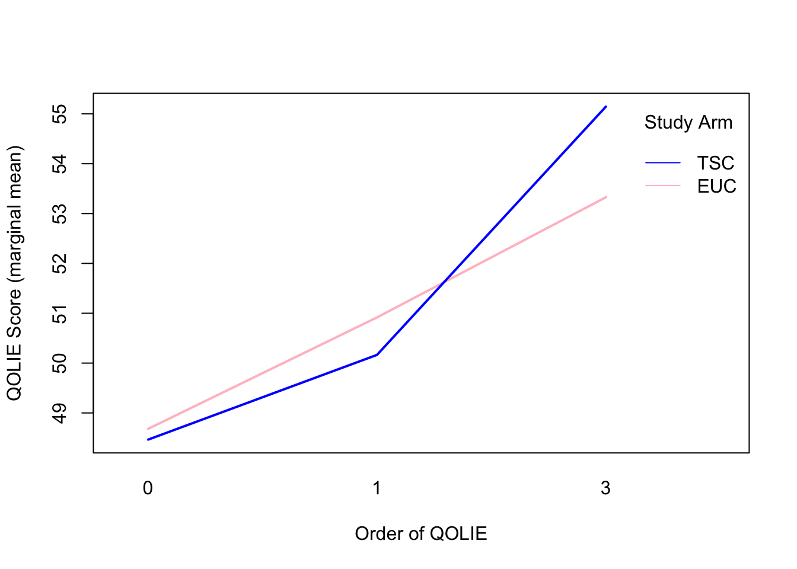
When trying to explain the group difference among the times and the arms,
The intercept is the QOLIE score of EUC arm on the 0th order.
For the 0th records, the difference between 2 arms is not significant.
the main effect of order is kind of significantly(1th over 0th: p < 0.1, marginal significant; 3th over 0th, p < 0.05, siginificant) positive – as time goes by (may caused by more treatment, changes in life, age grows), the QOLIE score improves.
Not find any evidence that the TSC has a better effect than EUC on every visit.
The lm formula creates several dummy variables:
TSC, for TSC arm is 1 and EUC arm is 0;
order1 and order3, for 0th having both 2 are 0, 1th for only order1 = 1 and 3th for only order3 = 1.
\[QOLIE = 48.6810946 + -0.2160521 * TSC + 2.2353547 * order_1 + 4.6460678 * order_3 \\ + -0.5350992 * TSC * order_1 + 2.0338043 * TSC * order_3 \]
summary(lm(score ~ factor(study_arm)*factor(order) + age, qinfo))
Call:
lm(formula = score ~ factor(study_arm) * factor(order) + age,
data = qinfo)
Residuals:
Min 1Q Median 3Q Max
-54.982 -8.212 0.958 9.256 42.552
Coefficients:
Estimate Std. Error t value Pr(>|t|)
(Intercept) 37.1729 2.7219 13.657 < 2e-16 ***
factor(study_arm)TSC -0.1890 1.1669 -0.162 0.8713
factor(order)1 2.0521 1.2294 1.669 0.0953 .
factor(order)3 3.1645 1.2551 2.521 0.0118 *
age 0.8076 0.1813 4.454 8.93e-06 ***
factor(study_arm)TSC:factor(order)1 -0.5347 1.6755 -0.319 0.7497
factor(study_arm)TSC:factor(order)3 2.0356 1.6502 1.234 0.2175
---
Signif. codes: 0 '***' 0.001 '**' 0.01 '*' 0.05 '.' 0.1 ' ' 1
Residual standard error: 14.65 on 1858 degrees of freedom
Multiple R-squared: 0.03779, Adjusted R-squared: 0.03468
F-statistic: 12.16 on 6 and 1858 DF, p-value: 1.873e-13ggplot(qinfo,aes(x = age, y = score, color = order)) +
geom_point(position = "jitter") +
geom_smooth(method='lm')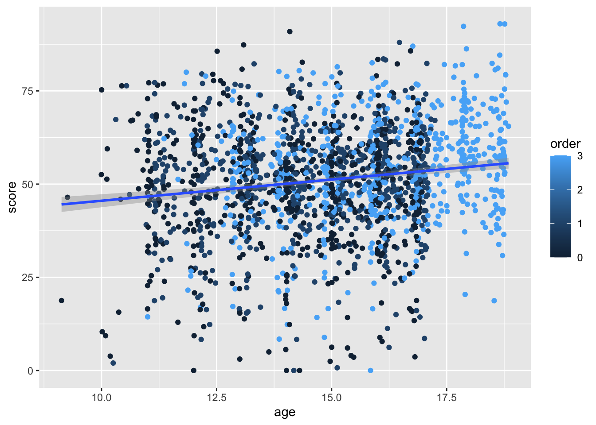
Age plays a small role over time – the increasing age interpret part of the increasing QOLIE over visits and time. The order is no longer have a significance effect.
the lm formula is (only age is not a dummy variable):
\[QOLIE = 37.1728684 + -0.1890242 * TSC + 2.0521008 * order_1 + 3.1645446 * order_3 \\ + -0.5347111 * TSC * order_1 + 2.035648 * TSC*order_3 + 0.807643 * age\]
summary(lm(score ~ factor(study_arm)*factor(order) + factor(gender), qinfo))
Call:
lm(formula = score ~ factor(study_arm) * factor(order) + factor(gender),
data = qinfo)
Residuals:
Min 1Q Median 3Q Max
-55.501 -8.089 1.062 9.344 43.030
Coefficients:
Estimate Std. Error t value Pr(>|t|)
(Intercept) 48.0812 0.9717 49.481 < 2e-16 ***
factor(study_arm)TSC -0.1947 1.1726 -0.166 0.868166
factor(order)1 2.2458 1.2347 1.819 0.069085 .
factor(order)3 4.6461 1.2161 3.820 0.000138 ***
factor(gender)2 0.9349 0.7053 1.326 0.185136
factor(study_arm)TSC:factor(order)1 -0.5467 1.6837 -0.325 0.745458
factor(study_arm)TSC:factor(order)3 2.0338 1.6582 1.227 0.220160
---
Signif. codes: 0 '***' 0.001 '**' 0.01 '*' 0.05 '.' 0.1 ' ' 1
Residual standard error: 14.72 on 1858 degrees of freedom
Multiple R-squared: 0.02844, Adjusted R-squared: 0.0253
F-statistic: 9.063 on 6 and 1858 DF, p-value: 8.648e-10Gender plays no role.
summary(lm(score ~ factor(study_arm)*factor(order) + age + factor(city), qinfo))
Call:
lm(formula = score ~ factor(study_arm) * factor(order) + age +
factor(city), data = qinfo)
Residuals:
Min 1Q Median 3Q Max
-52.041 -8.299 0.897 9.313 45.502
Coefficients:
Estimate Std. Error t value Pr(>|t|)
(Intercept) 37.5086 2.7986 13.403 < 2e-16 ***
factor(study_arm)TSC -0.5679 1.1565 -0.491 0.623436
factor(order)1 2.0376 1.2168 1.675 0.094187 .
factor(order)3 3.3619 1.2428 2.705 0.006892 **
age 0.7000 0.1807 3.874 0.000111 ***
factor(city)Kano 3.4593 0.8506 4.067 4.96e-05 ***
factor(city)Zaria -1.3909 0.9678 -1.437 0.150850
factor(study_arm)TSC:factor(order)1 -0.5013 1.6584 -0.302 0.762453
factor(study_arm)TSC:factor(order)3 2.0354 1.6333 1.246 0.212846
---
Signif. codes: 0 '***' 0.001 '**' 0.01 '*' 0.05 '.' 0.1 ' ' 1
Residual standard error: 14.5 on 1856 degrees of freedom
Multiple R-squared: 0.05843, Adjusted R-squared: 0.05437
F-statistic: 14.4 on 8 and 1856 DF, p-value: < 2.2e-16City plays a role that Zario < Keduna < Kano.
\[QOLIE = 37.5085908 + -0.5679033 * TSC + 2.0376459 * order_1 + 3.3619162 * order_3 + -0.5013377 * TSC * order_1 + 2.0354024 * TSC * order_3 \\ + 0.7000472 * age + 3.4592855 * Kano + -1.3908916 * Zaria\]
if the missed_fu is like “no” or “on time”, include no matter any missing. There’re 458 records(2.814478 % of all) meeting the conditions.
if the missed_fu is NA or “Visit Done”, inclusion depends on whether they filled all of follow_up_care_form_complete, confirmseize, weight_fu_v2, seizeclass. There ’re 15054 records (92.5090641 % of all) meeting the conditions.
if the missed_fu answers something else, exclude. There’re 761 records (4.6764579 % of all) excluded.
fcf_c %>% distinct(record_id) %>% left_join(gender) %>%
mutate(gender=factor(gender,levels=1:2,labels=c("Female","Male"))) %>%
count(study_arm, gender) %>% group_by(study_arm) %>%
mutate(pct = percent(n/sum(n))) %>%
kable(caption = "Gender in 2 arms") %>%
kable_styling(full_width = F, bootstrap_options = c("striped", "hover"))| study_arm | gender | n | pct |
|---|---|---|---|
| EUC | Female | 269 | 37% |
| EUC | Male | 458 | 63% |
| TSC | Female | 272 | 36% |
| TSC | Male | 491 | 64% |
fcf_c %>% distinct(record_id) %>% left_join(location) %>%
count(study_arm, city) %>% group_by(study_arm) %>%
mutate(pct = percent(n/sum(n))) %>%
kable(caption = "City in 2 arms") %>%
kable_styling(full_width = F, bootstrap_options = c("striped", "hover"))| study_arm | city | n | pct |
|---|---|---|---|
| EUC | Kaduna | 156 | 21.5% |
| EUC | Kano | 372 | 51.2% |
| EUC | Zaria | 199 | 27.4% |
| TSC | Kaduna | 189 | 24.8% |
| TSC | Kano | 401 | 52.6% |
| TSC | Zaria | 173 | 22.7% |
ggplot(fcf_c, aes(x = agefu, y = qolie, color = factor(redcap_repeat_instance))) +
geom_point(position = "dodge", alpha = 0.8) +
scale_color_brewer(palette = "Spectral")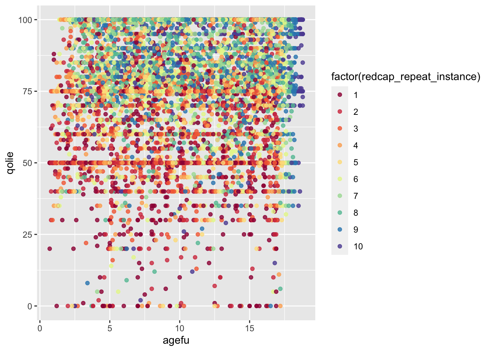
fcf_c %>%
ggplot(aes(x=qolie)) +
geom_histogram(binwidth = 1) +
facet_grid(study_arm~.) +
theme_minimal() +
xlab("VAS") + ylab("Freq") +
ggtitle("Distribution of valid scores")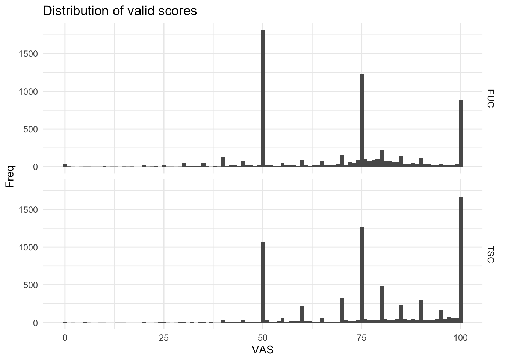
For the cost-effectiveness analysis, we need to compare the utilities between the two arms along with the 10 follow up visits. Study arm is a two-level factor as EUC is the control group and TSC is the treatment group. lm function creates a dummy variable named TSC(the line: factor(study_arm) TSC) that TSC = 1 for TSC group and TSC = 0 for EUC group.
The main effect of visits is to use the Screening (visit 0) as the baseline. There are 10 dummy variables for all follow-up visits: if all are 0, it refers to the screening visit; if visit1 = 1, the others should all be 0 and this refers to Follow-up Visit 1.
The interaction shows the expected difference in the effect of the N-th visit(compared to the screening) for TSC participants versus EUC participants. For example, factor(study_arm)TSC:factor(visit)1 means visit1 = 1 and TSC = 1, which compares the VAS of the TSC arm on the first follow-up visit with that of the EUC arm. If it is the screening visit or in EUC arm, all the interaction portions will be zero.
The intercept, is the average VAS of screening visit in EUC arm.
fcf_i = fcf_c %>% filter(!is.na(qolie)) %>% select(record_id, study_arm, visit = redcap_repeat_instance, qolie, age = agefu, gender, city) %>% mutate(gender = ifelse(gender == 1, "Female", "Male"), visit = as.numeric(visit)) %>% bind_rows(bs %>% filter(qolie_48_1117_v0_complete == "2") %>% select(record_id = unique_id, study_arm, qolie = vas_qolie_48, age, gender, city) %>% mutate(visit = 0))
summary(lm(qolie ~ factor(study_arm)*factor(visit), fcf_i))
Call:
lm(formula = qolie ~ factor(study_arm) * factor(visit), data = fcf_i)
Residuals:
Min 1Q Median 3Q Max
-81.839 -11.000 1.132 11.548 49.436
Coefficients:
Estimate Std. Error t value Pr(>|t|)
(Intercept) 48.564 1.238 39.241 < 2e-16 ***
factor(study_arm)TSC 3.804 1.694 2.245 0.024793 *
factor(visit)1 5.077 1.398 3.632 0.000282 ***
factor(visit)2 8.037 1.397 5.752 9.02e-09 ***
factor(visit)3 12.436 1.398 8.893 < 2e-16 ***
factor(visit)4 15.304 1.400 10.933 < 2e-16 ***
factor(visit)5 19.993 1.398 14.303 < 2e-16 ***
factor(visit)6 22.857 1.393 16.412 < 2e-16 ***
factor(visit)7 26.146 1.393 18.769 < 2e-16 ***
factor(visit)8 29.753 1.390 21.405 < 2e-16 ***
factor(visit)9 30.002 1.391 21.575 < 2e-16 ***
factor(visit)10 30.999 1.390 22.298 < 2e-16 ***
factor(study_arm)TSC:factor(visit)1 2.524 1.919 1.315 0.188444
factor(study_arm)TSC:factor(visit)2 5.455 1.922 2.838 0.004550 **
factor(study_arm)TSC:factor(visit)3 4.445 1.926 2.307 0.021049 *
factor(study_arm)TSC:factor(visit)4 6.035 1.925 3.135 0.001722 **
factor(study_arm)TSC:factor(visit)5 4.110 1.923 2.136 0.032656 *
factor(study_arm)TSC:factor(visit)6 5.199 1.917 2.712 0.006691 **
factor(study_arm)TSC:factor(visit)7 5.080 1.914 2.654 0.007965 **
factor(study_arm)TSC:factor(visit)8 5.718 1.911 2.993 0.002771 **
factor(study_arm)TSC:factor(visit)9 6.082 1.912 3.181 0.001470 **
factor(study_arm)TSC:factor(visit)10 6.727 1.912 3.518 0.000436 ***
---
Signif. codes: 0 '***' 0.001 '**' 0.01 '*' 0.05 '.' 0.1 ' ' 1
Residual standard error: 16.97 on 14640 degrees of freedom
Multiple R-squared: 0.2942, Adjusted R-squared: 0.2932
F-statistic: 290.6 on 21 and 14640 DF, p-value: < 2.2e-16interaction.plot(x.factor = fcf_i$visit, #x-axis variable
trace.factor = fcf_i$study_arm, #variable for lines
response = fcf_i$qolie, #y-axis variable
fun = mean, #metric to plot
fixed = TRUE,
ylab = "QOLIE Score (marginal mean)",
xlab = "Follow-up Visits",
col = c("pink", "blue"),
lty = 1, #line type
lwd = 2, #line width
trace.label = "Study Arm")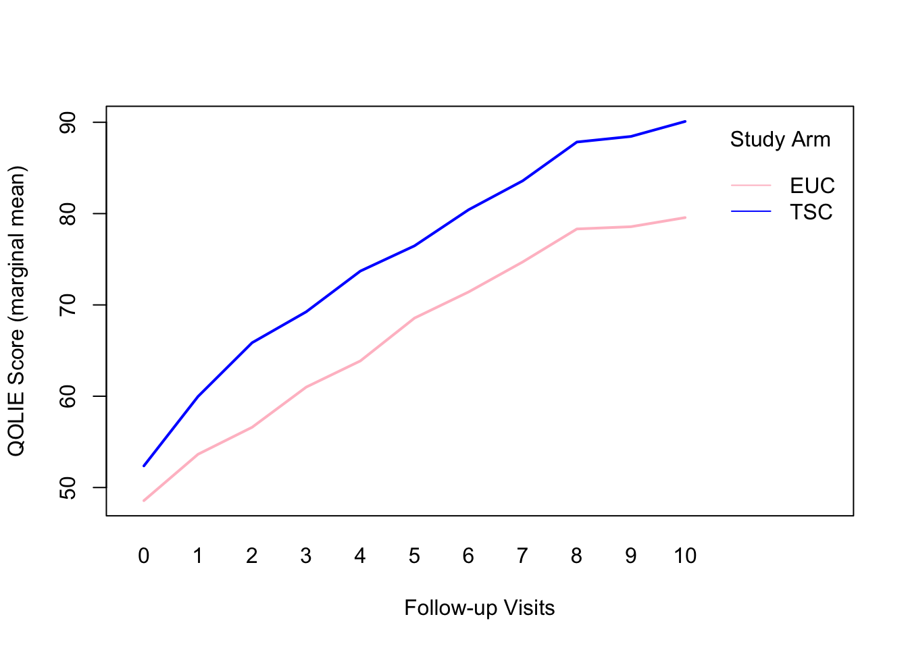
The linear model formula is:
\[VAS = 48.5638298 + 3.8036121 *TSC + 5.0769327 *Visit_1 + 8.0370474 *Visit_2 + 12.4361702 * Visit_3 + 15.3039265 *Visit_4 + 19.993355 * Visit_5 \\ + 22.8568501 *Visit_6 + 26.1463975 * Visit_7 + 29.7532773 * Visit_8 + 30.0018127 * Visit_9 + 30.9988443 * Visit_{10} \\ + 2.5244179 * TSC * Visit_1 + 5.4552583 * TSC * Visit_2 + 4.4445842 * TSC * Visit_3 + 6.0348463 * TSC * Visit_4 + 4.1095422 * TSC * Visit_5 \\ + 5.1993669 * TSC * Visit_6 + 5.0802862 * TSC * Visit_7 + 5.718331 * TSC * Visit_8 + 6.0822727 * TSC * Visit_9 + 6.7270472 * TSC * Visit_{10} \]
the number of * shows the level of significance. Here, from the interaction parts, we can find the score of TSC is significantly higher than EUC for every visit.
For the screening visit, the score of TSC is 3.804 higher than the EUC(p = 0.02 shows significant group difference in the popularity). The difference expands over the visits
As it cost 2 years for the whole process, the kids may have improved VAS just due to the increasing age, while age is not a element of our research interest– that’s why we add age as a covariant.
To highlight the age, here we use residuals of VAS after excluding the age effect, rather than just add age into the model.
summary(lm(qolie ~ age, fcf_i))
Call:
lm(formula = qolie ~ age, data = fcf_i)
Residuals:
Min 1Q Median 3Q Max
-73.511 -21.140 2.607 16.354 29.535
Coefficients:
Estimate Std. Error t value Pr(>|t|)
(Intercept) 70.19530 0.43083 162.929 < 2e-16 ***
age 0.19280 0.03716 5.189 2.15e-07 ***
---
Signif. codes: 0 '***' 0.001 '**' 0.01 '*' 0.05 '.' 0.1 ' ' 1
Residual standard error: 20.18 on 14068 degrees of freedom
(592 observations deleted due to missingness)
Multiple R-squared: 0.00191, Adjusted R-squared: 0.001839
F-statistic: 26.92 on 1 and 14068 DF, p-value: 2.147e-07fcf_a = bind_cols(fcf_i %>% filter(!is.na(age)), residuals(lm(qolie ~ age, fcf_i)))
colnames(fcf_a)[8] = "age_residual"
summary(lm(age_residual ~ factor(study_arm)*factor(visit), fcf_a))
Call:
lm(formula = age_residual ~ factor(study_arm) * factor(visit),
data = fcf_a)
Residuals:
Min 1Q Median 3Q Max
-82.981 -11.134 0.767 12.045 49.687
Coefficients:
Estimate Std. Error t value Pr(>|t|)
(Intercept) -24.331 1.245 -19.549 < 2e-16 ***
factor(study_arm)TSC 3.760 1.704 2.207 0.027346 *
factor(visit)1 5.890 1.406 4.190 2.81e-05 ***
factor(visit)2 8.841 1.405 6.292 3.23e-10 ***
factor(visit)3 13.230 1.406 9.407 < 2e-16 ***
factor(visit)4 16.069 1.408 11.415 < 2e-16 ***
factor(visit)5 20.729 1.406 14.746 < 2e-16 ***
factor(visit)6 23.547 1.401 16.813 < 2e-16 ***
factor(visit)7 26.783 1.402 19.107 < 2e-16 ***
factor(visit)8 30.406 1.399 21.736 < 2e-16 ***
factor(visit)9 30.558 1.406 21.735 < 2e-16 ***
factor(visit)10 31.010 1.461 21.229 < 2e-16 ***
factor(study_arm)TSC:factor(visit)1 2.518 1.930 1.305 0.191991
factor(study_arm)TSC:factor(visit)2 5.448 1.933 2.818 0.004840 **
factor(study_arm)TSC:factor(visit)3 4.424 1.937 2.284 0.022388 *
factor(study_arm)TSC:factor(visit)4 6.022 1.936 3.111 0.001868 **
factor(study_arm)TSC:factor(visit)5 4.110 1.934 2.125 0.033617 *
factor(study_arm)TSC:factor(visit)6 5.166 1.928 2.680 0.007377 **
factor(study_arm)TSC:factor(visit)7 5.131 1.926 2.664 0.007741 **
factor(study_arm)TSC:factor(visit)8 5.634 1.923 2.930 0.003400 **
factor(study_arm)TSC:factor(visit)9 6.017 1.934 3.112 0.001863 **
factor(study_arm)TSC:factor(visit)10 7.778 2.026 3.839 0.000124 ***
---
Signif. codes: 0 '***' 0.001 '**' 0.01 '*' 0.05 '.' 0.1 ' ' 1
Residual standard error: 17.06 on 14048 degrees of freedom
Multiple R-squared: 0.2858, Adjusted R-squared: 0.2848
F-statistic: 267.8 on 21 and 14048 DF, p-value: < 2.2e-16interaction.plot(x.factor = fcf_a$visit, #x-axis variable
trace.factor = fcf_a$study_arm, #variable for lines
response = 69.57732 + fcf_a$age_residual, #y-axis variable
fun = mean, #metric to plot
fixed = TRUE,
ylab = "the QOLIE Score excluded the covariance effect of age",
xlab = "Follow-up Visits",
col = c("pink", "blue"),
lty = 1, #line type
lwd = 2, #line width
trace.label = "Study Arm")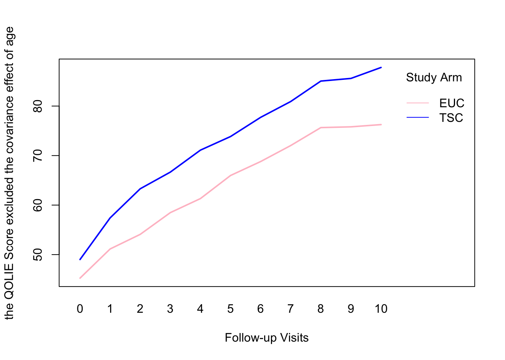
age plays a role to interpret the increasing tendency of VAS over 10 visits, but the Task-shift treatment still have better effects than the the control group proved to be significant from the interaction estimates.
summary(lm(qolie ~ factor(study_arm)*factor(visit) + factor(gender), fcf_i))
Call:
lm(formula = qolie ~ factor(study_arm) * factor(visit) + factor(gender),
data = fcf_i)
Residuals:
Min 1Q Median 3Q Max
-81.846 -10.989 1.144 11.560 49.430
Coefficients:
Estimate Std. Error t value Pr(>|t|)
(Intercept) 48.5517 1.2523 38.772 < 2e-16 ***
factor(study_arm)TSC 3.8032 1.6945 2.244 0.024817 *
factor(visit)1 5.0774 1.3979 3.632 0.000282 ***
factor(visit)2 8.0375 1.3974 5.752 9.01e-09 ***
factor(visit)3 12.4368 1.3985 8.893 < 2e-16 ***
factor(visit)4 15.3044 1.3999 10.933 < 2e-16 ***
factor(visit)5 19.9937 1.3979 14.303 < 2e-16 ***
factor(visit)6 22.8573 1.3927 16.412 < 2e-16 ***
factor(visit)7 26.1469 1.3931 18.768 < 2e-16 ***
factor(visit)8 29.7537 1.3901 21.404 < 2e-16 ***
factor(visit)9 30.0023 1.3907 21.574 < 2e-16 ***
factor(visit)10 30.9993 1.3903 22.297 < 2e-16 ***
factor(gender)Male 0.0185 0.2916 0.063 0.949403
factor(study_arm)TSC:factor(visit)1 2.5246 1.9194 1.315 0.188429
factor(study_arm)TSC:factor(visit)2 5.4554 1.9225 2.838 0.004551 **
factor(study_arm)TSC:factor(visit)3 4.4447 1.9263 2.307 0.021051 *
factor(study_arm)TSC:factor(visit)4 6.0351 1.9250 3.135 0.001721 **
factor(study_arm)TSC:factor(visit)5 4.1097 1.9236 2.137 0.032654 *
factor(study_arm)TSC:factor(visit)6 5.1997 1.9171 2.712 0.006690 **
factor(study_arm)TSC:factor(visit)7 5.0805 1.9143 2.654 0.007964 **
factor(study_arm)TSC:factor(visit)8 5.7185 1.9109 2.993 0.002771 **
factor(study_arm)TSC:factor(visit)9 6.0824 1.9120 3.181 0.001470 **
factor(study_arm)TSC:factor(visit)10 6.7271 1.9121 3.518 0.000436 ***
---
Signif. codes: 0 '***' 0.001 '**' 0.01 '*' 0.05 '.' 0.1 ' ' 1
Residual standard error: 16.97 on 14639 degrees of freedom
Multiple R-squared: 0.2942, Adjusted R-squared: 0.2931
F-statistic: 277.4 on 22 and 14639 DF, p-value: < 2.2e-16cat("There is no difference between the genders. ")There is no difference between the genders. summary(lm(qolie ~ factor(study_arm)*factor(visit) + factor(city), fcf_i))
Call:
lm(formula = qolie ~ factor(study_arm) * factor(visit) + factor(city),
data = fcf_i)
Residuals:
Min 1Q Median 3Q Max
-80.658 -10.740 0.148 12.039 50.571
Coefficients:
Estimate Std. Error t value Pr(>|t|)
(Intercept) 53.0102 1.2484 42.461 < 2e-16 ***
factor(study_arm)TSC 3.7995 1.6757 2.267 0.023381 *
factor(visit)1 5.2793 1.3824 3.819 0.000135 ***
factor(visit)2 8.2531 1.3820 5.972 2.4e-09 ***
factor(visit)3 12.6482 1.3831 9.145 < 2e-16 ***
factor(visit)4 15.4744 1.3844 11.178 < 2e-16 ***
factor(visit)5 20.1247 1.3824 14.558 < 2e-16 ***
factor(visit)6 23.0330 1.3773 16.723 < 2e-16 ***
factor(visit)7 26.3171 1.3778 19.101 < 2e-16 ***
factor(visit)8 29.9403 1.3747 21.779 < 2e-16 ***
factor(visit)9 30.1900 1.3753 21.951 < 2e-16 ***
factor(visit)10 31.1832 1.3749 22.680 < 2e-16 ***
factor(city)Kano -5.5807 0.3457 -16.145 < 2e-16 ***
factor(city)Zaria -6.5236 0.3994 -16.333 < 2e-16 ***
factor(study_arm)TSC:factor(visit)1 2.2797 1.8983 1.201 0.229796
factor(study_arm)TSC:factor(visit)2 5.2106 1.9013 2.741 0.006142 **
factor(study_arm)TSC:factor(visit)3 4.2239 1.9051 2.217 0.026629 *
factor(study_arm)TSC:factor(visit)4 5.8167 1.9039 3.055 0.002253 **
factor(study_arm)TSC:factor(visit)5 3.8950 1.9024 2.047 0.040636 *
factor(study_arm)TSC:factor(visit)6 5.0094 1.8959 2.642 0.008246 **
factor(study_arm)TSC:factor(visit)7 4.8576 1.8932 2.566 0.010303 *
factor(study_arm)TSC:factor(visit)8 5.4886 1.8898 2.904 0.003687 **
factor(study_arm)TSC:factor(visit)9 5.8484 1.8909 3.093 0.001986 **
factor(study_arm)TSC:factor(visit)10 6.5283 1.8910 3.452 0.000557 ***
---
Signif. codes: 0 '***' 0.001 '**' 0.01 '*' 0.05 '.' 0.1 ' ' 1
Residual standard error: 16.78 on 14638 degrees of freedom
Multiple R-squared: 0.3098, Adjusted R-squared: 0.3087
F-statistic: 285.6 on 23 and 14638 DF, p-value: < 2.2e-16cat("As for the cities, Keduna > Kano > Zaria")As for the cities, Keduna > Kano > ZariaAs city is one of the variable of our interest, we include it into the linear model and find that participants in different cities will have significantly different average VAS.
data_qolie = qinfo %>% mutate(visit = ifelse(order == 1, 3, ifelse(order == 3, 10, 0))) %>%
group_by(study_arm, visit) %>%
summarise(qolie = mean(score), qolie_sd = sd(score))
fcf_i %>%
group_by(study_arm, visit) %>%
summarise(vas = mean(qolie), vas_sd = sd(qolie)) %>%
ggplot(aes(x = visit, y = vas, color = study_arm)) +
geom_line(linetype = 1) +
geom_point() +
# geom_errorbar(aes(ymin = vas - vas_sd, ymax = vas + vas_sd), width = .2) +
geom_line(data = data_qolie,
aes(x = visit, y = qolie, color = study_arm), linetype = 3) +
geom_point(data = data_qolie,
aes(x = visit, y = qolie, color = study_arm)) +
# geom_errorbar(data = data_qolie, aes(ymin = qolie - qolie_sd, ymax = qolie + qolie_sd), width = .2) +
ylab("quality of life score (0 - 100)") +
xlim(0, 10) +
scale_x_continuous(breaks = seq(0,10,1), limits = c(0,10)) +
theme_minimal() +
annotate("text", x = 3, y = 73, label = "VAS") +
annotate("text", x = 5, y = 54, label = "QOLIE")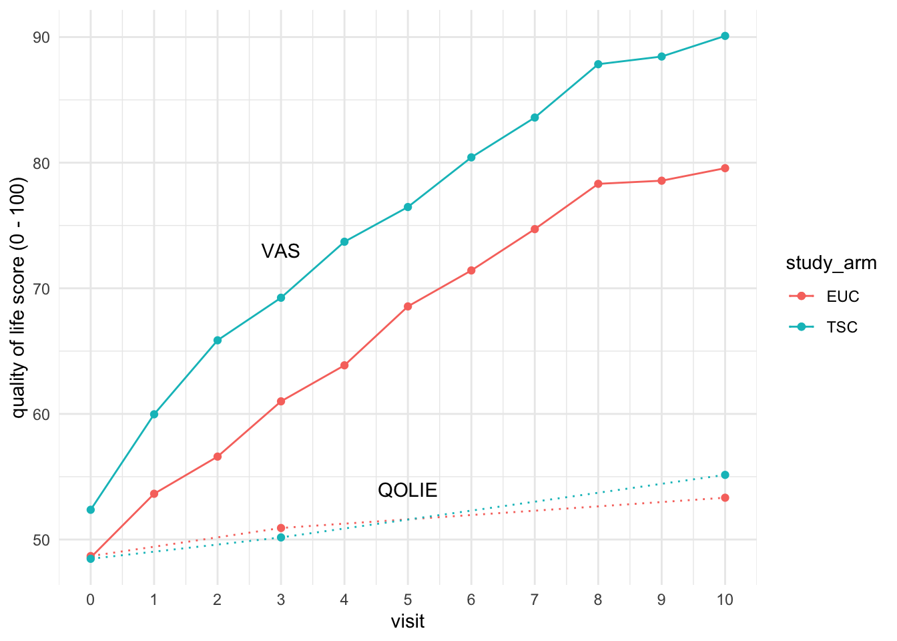
## should the x-axis to be months instead of visits?The two measures had similar tendency but the two arms of VAS had significance difference between them while QOLIE didn’t. As QOLIE-AD-48 and QOLIE-31 are longer questionnaires compared to one-question VAS, they might be more difficult for the patients to fill in, which led to a narrower result.
see the excel sheet. Right now use the avg unit cost for each yr. May need to consider the inflation and discounting.
What was the age of the child when the first seizure happened?
# bs %>% filter(!is.na(onset_age)) %>% select(id = unique_id, study_arm, onset_age) %>% filter(!is.na(id)) %>%
# kable(caption = "Onset age is submitted in text") %>%
# kable_styling() %>%
# scroll_box()
onsetAge = bs %>% filter(!is.na(onset_age)) %>% select(id = unique_id, study_arm, onset_age, age, dob, gender) %>% filter(!is.na(id)) %>%
mutate(onset_age = str_replace(onset_age, " and half", ".5"), onset_age = str_replace(onset_age, "and half", ".5"), onset_age = str_replace_all(onset_age, c("one" = "1", "first" = "1","First" = "1", "A " = "1", "I" = "1", "One" = "1", "two" = "2", "Two" = "2", "second" = "2", "three" = "3", "Three" = "3", "third" = "3", "four" = "4", "five" = "5", "six" = "6","Six" = "6", "seven" = "7", "eight" = "8", "nine" = "9", "ten" = "10", "birth" = "0", "born" = "0", "At birht" = "0", "After Brith" = "0", "2019" = "2", "November 2014" = "4"))) %>%
mutate(onset = ifelse(str_detect(onset_age, "Last month"), round(age - 1/12), ifelse(str_detect(onset_age, "d")|str_detect(onset_age, "D"), round(parse_number(onset_age)/365.25), ifelse(str_detect(onset_age, "y") & (str_detect(onset_age, "(6|8)( |)m")), round(parse_number(onset_age) + 1), ifelse(str_detect(onset_age, "y")|str_detect(onset_age, "Y"), round(parse_number(onset_age)), ifelse(str_detect(onset_age, "m")|str_detect(onset_age, "M"), round(parse_number(onset_age)/12), ifelse(str_detect(onset_age, "w")|str_detect(onset_age, "W"), round(parse_number(onset_age)/52), parse_number(onset_age))))))))
onsetAge %>%
filter(!is.na(onset)) %>%
group_by(study_arm, gender) %>%
summarise(meanOnsetAge = mean(onset), sdOnsetAge = sd(onset))# A tibble: 4 × 4
# Groups: study_arm [2]
study_arm gender meanOnsetAge sdOnsetAge
<chr> <chr> <dbl> <dbl>
1 EUC Female 3.40 3.39
2 EUC Male 3.26 3.51
3 TSC Female 3.13 3.33
4 TSC Male 3.75 3.53onsetAge %>%
ggplot(aes(x = onset)) +
geom_histogram(binwidth = 1) +
facet_grid(study_arm ~ gender) +
stat_bin(binwidth=1, geom="text", aes(label=..count..), vjust = -0.25) +
theme_minimal() +
xlab("Age (in years)") + ylab("Freq") +
ggtitle("Onset Age Distribution for 2 arms")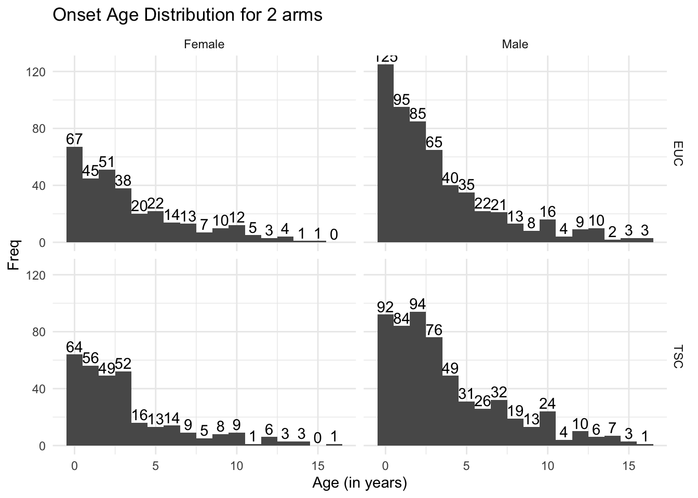
we can use the frequency to get the severity.
severe epilepsy, defined as an average seizure frequency of more than or equal to once per month; less severe epilepsy with a seizure frequency of less than once a month, or no seizures in the past year while untreated but still fulfilling the criteria of active epilepsy; and seizure-free, treated epilepsy, defined as not having seizures in the past year while on treatment.
The only question is that all the patients in our researsh should be considered as under treatment if they have less severe epilepsy.
#melt
preInterval = cbind(fudw['record_id'], stack(fudw[c("d01","d12", "d23", "d34", "d45", "d56", "d67", "d78", "d89", "d90")])) %>% mutate(visit = ifelse(ind == "d90", 10, as.numeric(ind[-1]))) %>% select(record_id, visit, interval = values)
seizure_tsc = fcf_c %>% filter(!is.na(expseiz) & study_arm == "TSC") %>% mutate(seiz_times = ifelse(is.na(how_many_seiz_v2), 0, how_many_seiz_v2)) %>% mutate(visit = as.numeric(redcap_repeat_instance)) %>% left_join(preInterval, by = c("record_id", "visit")) %>% mutate(seiz_freq = 365.25/12 * seiz_times / interval)
seizure_euc = fcf_c %>% filter(seize_since_last_euc_v2 != 2 & study_arm == "EUC") %>% mutate(seiz_times = ifelse(is.na(number_seiz), 0, number_seiz)) %>% mutate(visit = as.numeric(redcap_repeat_instance)) %>% left_join(preInterval, by = c("record_id", "visit")) %>% mutate(seiz_freq = 365.25/12 * seiz_times / interval)
seizure_times = rbind(seizure_tsc, seizure_euc) %>% filter(!is.na(seiz_freq) & seiz_freq != Inf)
summary(lm(seiz_freq ~ factor(study_arm)*factor(visit) + agefu + factor(gender) + factor(city), seizure_times))
Call:
lm(formula = seiz_freq ~ factor(study_arm) * factor(visit) +
agefu + factor(gender) + factor(city), data = seizure_times)
Residuals:
Min 1Q Median 3Q Max
-53.231 -1.237 -0.439 0.310 292.816
Coefficients:
Estimate Std. Error t value Pr(>|t|)
(Intercept) 10.21131 0.30781 33.174 < 2e-16 ***
factor(study_arm)TSC -4.34169 0.35074 -12.379 < 2e-16 ***
factor(visit)2 -7.13917 0.35832 -19.924 < 2e-16 ***
factor(visit)3 -8.23978 0.35901 -22.952 < 2e-16 ***
factor(visit)4 -9.30574 0.35983 -25.861 < 2e-16 ***
factor(visit)5 -9.34975 0.35717 -26.177 < 2e-16 ***
factor(visit)6 -9.83982 0.35443 -27.763 < 2e-16 ***
factor(visit)7 -9.86135 0.35510 -27.770 < 2e-16 ***
factor(visit)8 -9.87230 0.35350 -27.927 < 2e-16 ***
factor(visit)9 -9.79415 0.35833 -27.333 < 2e-16 ***
factor(visit)10 -10.24561 0.39000 -26.270 < 2e-16 ***
agefu -0.03854 0.01243 -3.102 0.00193 **
factor(gender)2 0.12382 0.11755 1.053 0.29222
factor(city)Kano 0.62648 0.14410 4.348 1.39e-05 ***
factor(city)Zaria 1.25123 0.16495 7.585 3.53e-14 ***
factor(study_arm)TSC:factor(visit)2 3.84985 0.49874 7.719 1.25e-14 ***
factor(study_arm)TSC:factor(visit)3 4.03640 0.50091 8.058 8.39e-16 ***
factor(study_arm)TSC:factor(visit)4 4.28884 0.50008 8.576 < 2e-16 ***
factor(study_arm)TSC:factor(visit)5 4.20612 0.49825 8.442 < 2e-16 ***
factor(study_arm)TSC:factor(visit)6 4.26441 0.49453 8.623 < 2e-16 ***
factor(study_arm)TSC:factor(visit)7 4.23470 0.49343 8.582 < 2e-16 ***
factor(study_arm)TSC:factor(visit)8 4.14546 0.49172 8.431 < 2e-16 ***
factor(study_arm)TSC:factor(visit)9 4.10195 0.49820 8.234 < 2e-16 ***
factor(study_arm)TSC:factor(visit)10 4.12469 0.55031 7.495 7.03e-14 ***
---
Signif. codes: 0 '***' 0.001 '**' 0.01 '*' 0.05 '.' 0.1 ' ' 1
Residual standard error: 6.595 on 13596 degrees of freedom
(592 observations deleted due to missingness)
Multiple R-squared: 0.1245, Adjusted R-squared: 0.123
F-statistic: 84.04 on 23 and 13596 DF, p-value: < 2.2e-16interaction.plot(x.factor = seizure_times$visit, #x-axis variable
trace.factor = seizure_times$study_arm, #variable for lines
response = seizure_times$seiz_freq, #y-axis variable
fun = mean, #metric to plot
ylab = "frequency of seizures (times per month)",
xlab = "Visit",
col = c("pink", "blue"),
lty = 1, #line type
lwd = 2, #line width
trace.label = "Study Arm")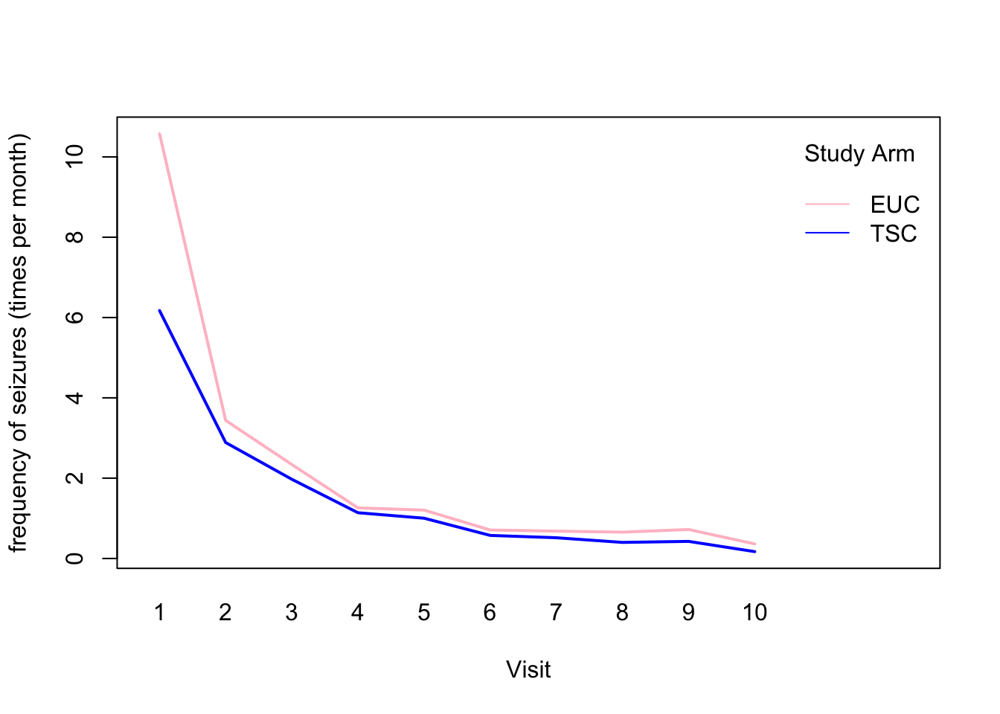
seizure_times %>%
ggplot(aes(x = seiz_freq)) +
geom_histogram(binwidth = 1) +
facet_grid(study_arm ~ .) +
theme_minimal()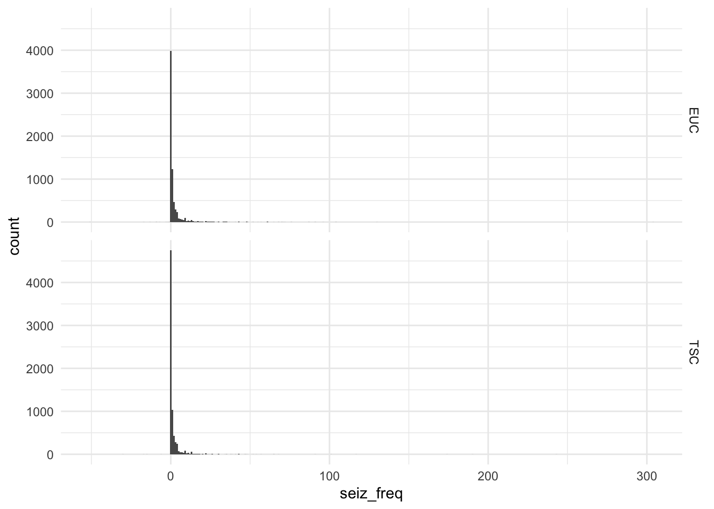
# to get the decrease of DALY, we need to get the beginning DALY and final DALY for 2 arms
pct_severe = seizure_times %>% mutate(severity = ifelse(seiz_freq >= 1, "severe epilepsy", "others")) %>%
group_by(study_arm, visit) %>% count(severity) %>% mutate(pct = percent(n / sum(n))) %>% filter(severity == "severe epilepsy") %>% ungroup() %>% select(visit,n, pct)
pct_severe %>%
kable(caption="percent of severe epilepsy in 2 arms among 10 visits") %>%
kable_styling(full_width = F, bootstrap_options = c("striped", "hover")) %>%
pack_rows("EUC",1,10) %>%
pack_rows("TSC",11,20)| visit | n | pct |
|---|---|---|
| EUC | ||
| 1 | 378 | 56% |
| 2 | 373 | 55% |
| 3 | 354 | 52.9% |
| 4 | 268 | 40% |
| 5 | 267 | 39% |
| 6 | 162 | 23% |
| 7 | 158 | 22% |
| 8 | 139 | 19% |
| 9 | 149 | 21% |
| 10 | 68 | 9% |
| TSC | ||
| 1 | 313 | 43% |
| 2 | 372 | 52.4% |
| 3 | 331 | 47.9% |
| 4 | 270 | 38% |
| 5 | 239 | 34% |
| 6 | 152 | 21% |
| 7 | 118 | 16% |
| 8 | 94 | 12% |
| 9 | 111 | 15% |
| 10 | 25 | 3% |
#
# cat("set limits for outliners: [Q1-1.5*IQR, Q3+1.5*IQR]")
#
# # delete outliners
# quartiles <- quantile(seizure_times$seiz_freq, probs=c(.25, .75), na.rm = FALSE)
# IQR <- IQR(seizure_times$seiz_freq)
# Lower <- quartiles[1] - 1.5*IQR
# Upper <- quartiles[2] + 1.5*IQR
# seizure_times %>% filter(seiz_freq > Lower & seiz_freq < Upper) %>% mutate(severity = ifelse(seiz_freq >= 1, "severe epilepsy", "seizure-free, treated epilepsy")) %>%
# group_by(study_arm, visit = redcap_repeat_instance) %>% count(severity) %>% mutate(pct = percent(n / sum(n))) %>% ungroup() %>%select(-study_arm) %>%
# kable(caption="percent of epilepsy classes in 2 arms among 10 visits without outliners") %>%
# kable_styling(full_width = F, bootstrap_options = c("striped", "hover")) %>%
# pack_rows("EUC",1,20) %>%
# pack_rows("TSC",21,40)As the intervals between screening and follow up visit 1 is not as scheduled stably as intervals between visits, we may use the reported seizure frequency in the Follow up visit 2(the 2th in the plot) as the baseline.
severe epilepsy, defined as an average seizure frequency of more than or equal to once per month;
less severe epilepsy with a seizure frequency of less than once a month, or no seizures in the past year while untreated but still fulfilling the criteria of active epilepsy;
and seizure-free, treated epilepsy, defined as not having seizures in the past year while on treatment.
if seiz_freq = 0 from visit 1 - 7 or 2/3 - 9 or 5 - 9 or 7 - 10, later can be regarded as seizure-free as far as no seizure happened.
Disability Weight (Essential for the YLDs) –
Severe epilepsy: 0.552
Less epilepsy: 0.263
seizure-free, treated epilepsy: 0.049
So we can get the difference between 2 arms.
For the YLLs part, we can use YLLs or mortality from GBD. However, as GBD only have the epilepsy category (not detailed), the 2 arms should be the same – if we don’t consider some of them recovered at the end.
# pct_seizure_free = seizure_times %>% filter(seiz_freq == 0) %>% count(record_id, visit, study_arm) %>% spread(visit, n, fill = 0, sep = "") %>%
# mutate(
# zero_0_12 = ifelse(visit1 == 1 & visit2 == 1 & visit3 == 1 & visit4 == 1 & visit5 == 1 & visit6 == 1 & visit7 == 1, TRUE, FALSE),
# zero_3_15 = ifelse(visit3 == 1 & visit4 == 1 & visit5 == 1 & visit6 == 1 & visit7 == 1 & visit8 == 1, TRUE, FALSE),
# zero_6_18 = ifelse(visit5 == 1 & visit6 == 1 & visit7 == 1 & visit8 == 1 & visit9 == 1, TRUE, FALSE)) %>%
# mutate(free_12_15 = ifelse(zero_0_12 & visit8 == 1, TRUE, FALSE),
# free_15_18 = ifelse(zero_3_15 & visit9 == 1, TRUE, FALSE),
# free_18_24 = ifelse(zero_6_18 & visit10 == 1, TRUE, FALSE))
# count how many NAs in each col
# sapply(severity, function(x) sum(is.na(x)))
severity = seizure_times %>% select(record_id, visit, study_arm, seiz_freq) %>% spread(visit, seiz_freq, sep = "") %>% drop_na() %>%
mutate(
zero_0_12 = ifelse(visit1 == 0 & visit2 == 0 & visit3 == 0 & visit4 == 0 & visit5 == 0 & visit6 == 0 & visit7 == 0, TRUE, FALSE),
zero_3_15 = ifelse(visit3 == 0 & visit4 == 0 & visit5 == 0 & visit6 == 0 & visit7 == 0 & visit8 == 0, TRUE, FALSE),
zero_6_18 = ifelse(visit5 == 0 & visit6 == 0 & visit7 == 0 & visit8 == 0 & visit9 == 0, TRUE, FALSE)) %>%
mutate(across(starts_with("visit"), ~ ifelse(.x >= 1, "severe epilepsy", "less severe epilepsy"), .names = "severity_{.col}")) %>%
mutate(severity_visit8 = ifelse(zero_0_12 & visit8 == 0, "seizure-free, treated", severity_visit8),
severity_visit9 = ifelse(zero_3_15 & visit9 == 0, "seizure-free, treated", severity_visit9),
severity_visit10 = ifelse(zero_6_18 & visit10 == 0, "seizure-free, treated", severity_visit9))
severity_DALY = severity %>%
mutate(across(starts_with("severity_visit"), ~ ifelse(.x == "severe epilepsy", 0.552, ifelse(.x == "less severe epilepsy", 0.263, 0.049)), .names = "DALYw_{.col}")) %>% select(-DALYw_severity_visit1) %>%
mutate(DALY_2yr = DALYw_severity_visit2 * 1/12 + DALYw_severity_visit3 * 1/12 + DALYw_severity_visit4 * 2/12 + DALYw_severity_visit5 * 2/12 + DALYw_severity_visit6 * 3/12 + DALYw_severity_visit7 * 3/12 + DALYw_severity_visit8 * 3/12 + DALYw_severity_visit9 * 3/12 + DALYw_severity_visit10 * 6/12)
severity_DALY %>%
group_by(study_arm) %>%
summarize(mean(DALY_2yr) / 2)# A tibble: 2 × 2
study_arm `mean(DALY_2yr)/2`
<chr> <dbl>
1 EUC 0.323
2 TSC 0.300incremental cost (in Naira) for TSC - EUC per patient = 3203.91(2-yr) / 2829.74(3-yr)
currency exchange rate in 2023: 490.4176 NGN
incremental -DALY yearly for TSC - EUC per patient = -0.29992 - (-0.32292) = 0.023
ICER = 3203.91/(0.023*2*490.4176) = 142
CEA threshold: 0.5 * GDPpc (2000 dollars in Nigeria) = 1000
DALY = YLL + YLD, while the kind and severity of disease will impact the disability weight for YLD.
The YLD can be computed based on factor of I × DW × L with uniform age weights and zero discounting, where, I represents the number of incident cases of childhood epilepsy in a reference period, DW is the disability weight (0–1), and L is the mean duration of disability (years) (Murray and Lopez, 1996).
For severe epilepsy: 0.552; For seizure-free, treated epilepsy: 0.049 (GBD, 2016). — the severity of disability was weighted between 0 (perfect health) and 1 (equivalent to death).
For the population, the DALYs will be calculated by disease, country, gender, average age of onset, average age of death, incident cases and incident deaths. – as the country and gender will determine the life expectancy at age of premature death.
Just for our dataset, it is impossible to gain the individual age of death. So we need to look for the average age of death for childhood epilepsy in Nigeria. – As few literature in this region, it is hard to get.
The first way is to use DALY from literature: 4.1 DALYs per 1000 individuals annually (Wagner, etc, 2015)[https://journals.plos.org/plosone/article?id=10.1371/journal.pone.0145300] or 2.18 DALYs for children within the age group of 5-14 years(Ughasoro, etc, 2016) [https://www.sciencedirect.com/science/article/pii/S0920121116300699]
as both numbers use an average disability weight, it is difficult but able to infer the DALY for severe and seizure free conditions.
As our 2 arms have different percents of severity, we can calculate the DALYs for each group.
The second way serves for the cost-effectiveness.
Incremental effectiveness = DALY_TSC - DALY_EUC = YLL_TSC + YLD_TSC - YLL_EUC - YLD_EUC
As the two arms we have almost the same onset age, and we will also use the same age of premature death for 2 arms, YLL_TSC = YLL_EUC
Incremental effectiveness = YLD_TSC - YLD_EUC ~ (Disability_weight_TSC - Disability_weight_EUC) * living_years
Delete:If compare them annually per 1000 individuals, incremental effectiveness using DALY weight for each year for the same population size = (0.03 * 0.552 + 0.97 * 0.049) - (0.10 * 0.552 + 0.90 * 0.049) = -0.03521
Although we can’t get an exact DALY for each arm, the cost-effectiveness analysis is more precise.
Content of Aim 3 in the protocol:
Determine the cost-effectiveness of the task-shifted epilepsy care intervention.
Direct costs of the intervention and EUC will include personnel costs (including CHEW epilepsy training) and expenses for diagnostic (EEG, brain imaging) and laboratory tests and anti-epileptic drugs.
Indirect costs will include travel time and time away from work for parents/guardians and change in school attendance for patients.
Cost-effectiveness will be expressed as US dollars per disability adjusted life year (DALY) averted.
Half-way to find the effectiveness of TSC.